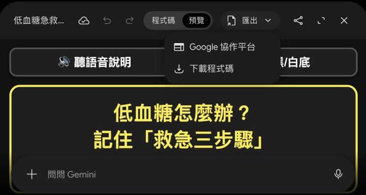
1 Canvas 右上「匯出」有兩個選項：Google 協作平台、下載程式碼。「下載程式碼」就是拿去 GitHub 的那個 HTML 檔。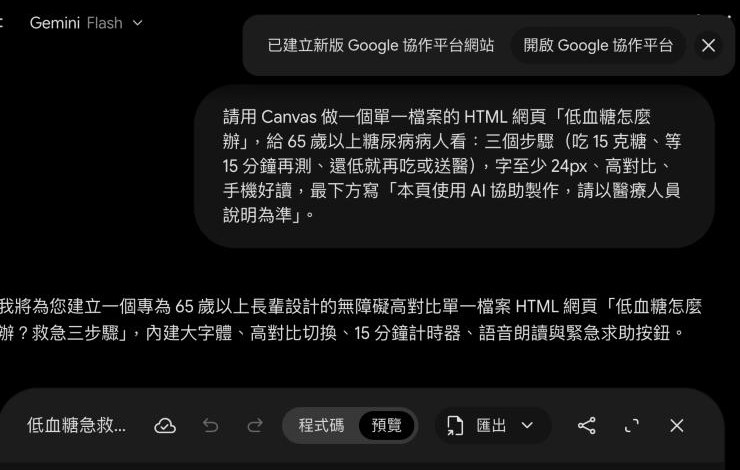
2 幾秒後跳出「已建立新版 Google 協作平台網站」→ 開啟。每按一次都會新建一個網站 ，不是更新舊的。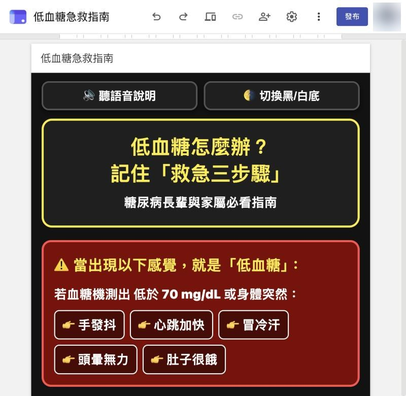
3 協作平台編輯器：整頁被嵌成一個區塊（頂端多一條標題列）。這時還不是公開的，要按右上「發布」。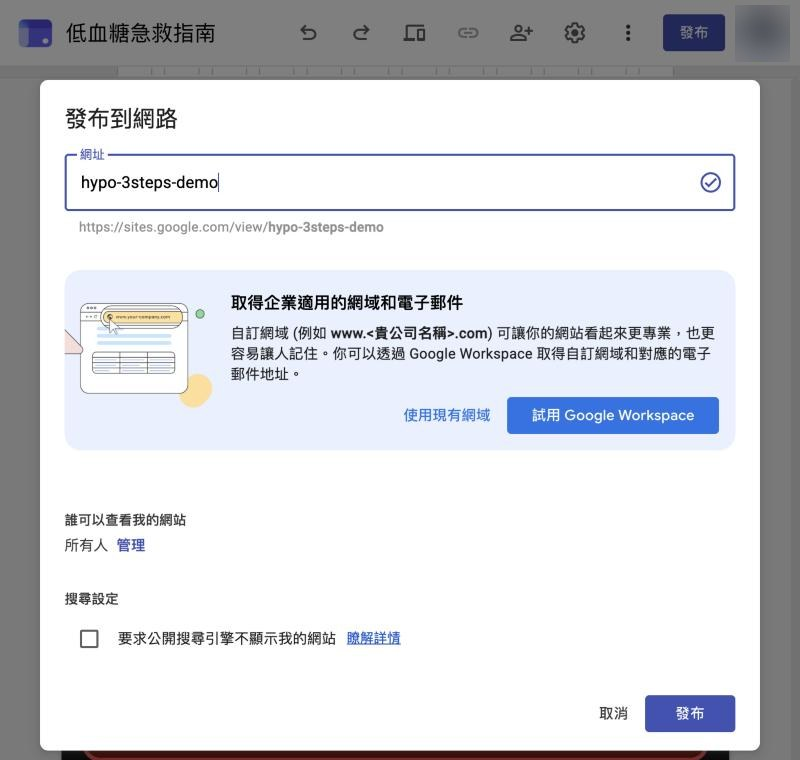
4 取網址名稱 → sites.google.com/view/名稱。「誰可以查看」預設所有人，Workspace 帳號可改成只限機構內；可勾「要求搜尋引擎不顯示」。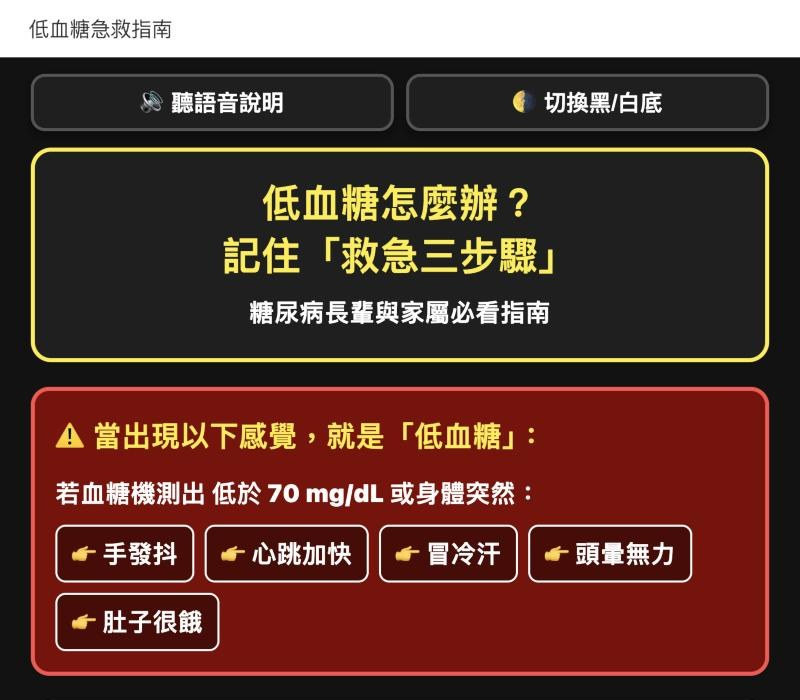
5 發布後約 1 分鐘打得開（剛發布的幾十秒會 404，等一下再試）。手機直式正常；內容長時會在嵌入框內另外捲動，可在編輯器把框拖高。優缺點（白話版）
優點 ：不用學 GitHub、不用再辦帳號，一分鐘就有網址；網址名稱可以自己取、可以印 QR；之後可以在協作平台裡再加頁面、導覽列、嵌 Google 表單；院內 Workspace 帳號可以設「只限機構內的人看」，這是 GitHub 公開頁做不到的。
缺點 ：① 像被放進相框 ：協作平台不是直接顯示你的網頁，而是在它自己的頁面裡開一個「窗」把你的網頁嵌進去，所以最上面會多一條協作平台的標題列；網頁很長時，要在那個窗裡再捲動一次（可在編輯器把窗拖高）。② 再匯出是「另一個網站」 ：在 Gemini 改好內容再按一次匯出，會多出一個全新的網站、新網址，舊網址還是舊內容；要更新得進協作平台改，或重新匯出後重發 QR。③ 網址不是你的 ：一律 sites.google.com/view/…；院內 Workspace 管理者有權限整個關掉對外發布。
怎麼選 ：今天先做出來給人看、或只給院內同事看 → 協作平台最快。要印成 QR 貼衛教室、要常常改、要放很多作品且各自有固定網址 → 「匯出 → 下載程式碼」拿到 HTML 檔，走 GitHub 五步驟：網址固定，改好重傳同名檔案就更新。兩邊可以並存：協作平台給院內，GitHub 給病人。
實測：表單放 GitHub 前端、Apps Script 當後端收資料（2026 年 11 月）
現場可以玩 ：form-demo.html （報名代碼 TYH2026，請填假資料），送出後老師的試算表「衛教報名_課堂示範」當場多一列。
sheets.new 開新試算表 → 擴充功能 → Apps Script → 貼上 Code.gs （只有 doPost：檢查報名代碼、寫入「報名資料」、附件存雲端硬碟）→ 存檔。
部署 → 新增部署作業 → 網頁應用程式：執行身分「我」、誰可以存取「所有人」→ 部署。會跳 Google 授權視窗 ：選帳號 → 進階 → 前往（不安全）→ 允許；沒做完不會真的部署。
拿到 /exec 網址，填進 form-demo.html 最下面的 APPS_SCRIPT_URL，改欄位與場次，拖上自己的 GitHub 倉庫。
用假資料填一次 →「報名成功」→ 試算表多一列，手機開頭的 0 有保留。改 Code.gs 要「管理部署作業 → 建立新版本」，改 form-demo.html 直接覆蓋上傳。
風險對策 ：/exec 網址在公開網頁裡，所以 Code.gs 檢查報名代碼、限制附件 5 MB 與 jpg/png/pdf；活動結束到「管理部署作業」封存。GitHub 上的 form-demo.html 不能放任何個資。
第四條路：ChatGPT 外掛程式，一句話直接 commit 到 GitHub（2026 年 11 月實測）
裝外掛 ：ChatGPT 左下「外掛程式」→「瀏覽目錄」找 GitHub（OpenAI 提供，功能 Interactive、Write）→ 安裝 → 用 GitHub 帳號授權。需 ChatGPT Plus 以上。權限 ：預設「允許唯讀工具」。第一次要它寫檔，對話裡會問「要允許 ChatGPT 使用 GitHub 嗎？將調用 Create File 工具」，選允許一次 ，不要「一律允許」。交辦 ：指定倉庫、檔名、分支 main、commit 訊息，貼上完整 HTML。它自己建檔、提交，回你檔案網址、commit ID 與 Pages 網址。驗收 ：1～2 分鐘後打開網址。它會提醒「提交成功不代表 Pages 已啟用」，第一次仍要到 Settings → Pages 開。
請用 GitHub 外掛程式，幫我建立一個新的公開倉庫 slides（如果已存在請先停下來問我），在 main 分支新增檔案 index.html，內容是我下面貼的完整 HTML，一字不改。commit 訊息寫「add slides」。完成後告訴我檔案網址，並提醒我到 Settings → Pages 開啟。
（接著貼上 AI 幫你做好的簡報 index.html 全部內容）
注意 ：它能寫就能覆蓋，檔名打錯會蓋掉 index.html 這類既有檔案。提示語裡檔名寫清楚、說「新增」不說「更新」，重要檔案先備份。實測成品：
chatgpt-upload-demo.html （處理 1 分 8 秒，全程沒開 GitHub 網站）。
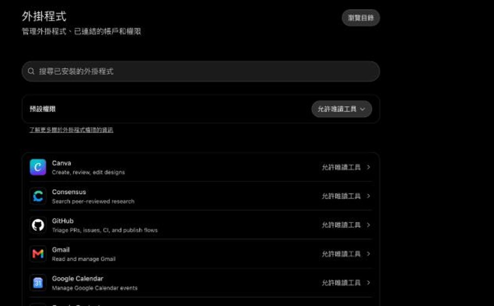
1 設定 → 外掛程式：GitHub 已安裝（Triage PRs, issues, CI, and publish flows），預設權限「允許唯讀工具」。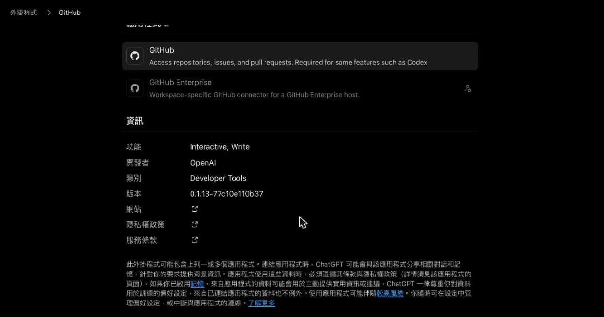
2 「查看詳細資訊」：功能 Interactive、Write，表示它能寫入你的倉庫，不只讀。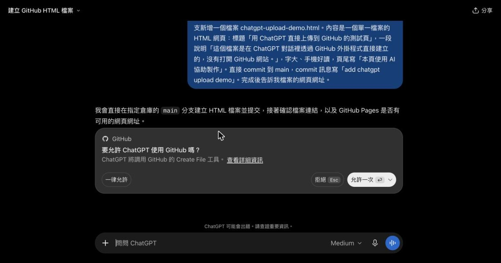
3 寫檔前一定會問：「ChatGPT 將調用 GitHub 的 Create File 工具」→ 允許一次／一律允許／拒絕。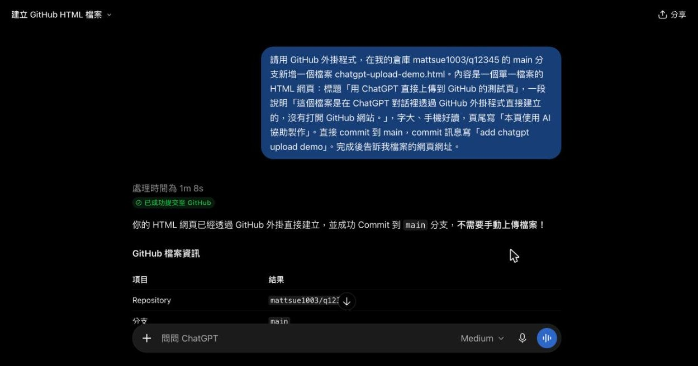
4 「已成功提交至 GitHub」，處理 1 分 8 秒。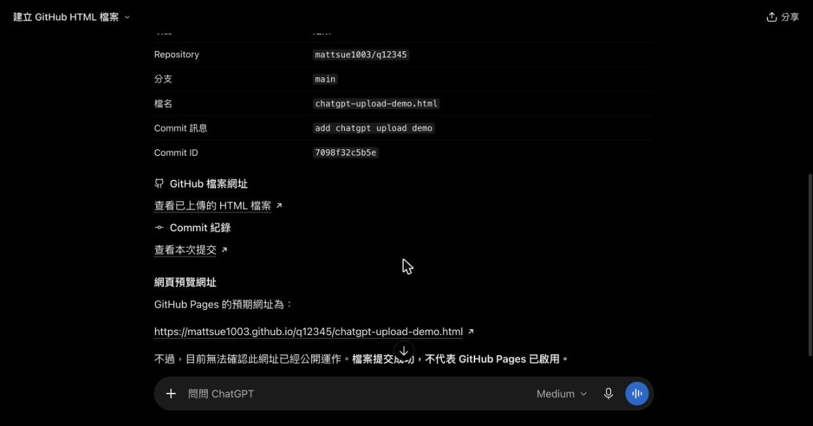
5 回報 Repository、分支、檔名、commit 訊息與 ID、檔案網址與 Pages 預期網址，並提醒「提交成功不代表 Pages 已啟用」。
網址打得開 ≠ 可以正式用：上線前讓 AI 幫你檢查 10 件事
手機排版 ：不會左右捲動，字至少 16px，按鈕一指按得到圖片瘦身 ：每張 300 KB 以下、寬不超過 1600px連結全通 ：首頁與作品之間的連結寫完整網址，點一遍沒有 404HTTPS ：Settings → Pages 勾「Enforce HTTPS」程式裡沒有祕密 ：沒有金鑰、密碼、個人手機、病人資料標題與描述 ：有 title、meta description、og:title，LINE 轉傳才有預覽卡速度 ：pagespeed.web.dev 貼網址，行動裝置四項 90 分以上表單真的送得到 ：自己填一次，試算表有資料、通知有收到標示 ：「AI 協助製作」「請以醫療人員說明為準」、最後更新日期無障礙 ：對比夠、每張圖有替代文字、不只靠顏色表達
（貼上你的 index.html 全部內容）
請用下面 10 項逐一檢查這個網頁，每項回答「通過／不通過／怎麼改」：手機排版、圖片大小、連結是否都有效、HTTPS、程式裡有沒有金鑰或個資、title 與 meta description 與 og 標籤、載入速度、表單送出測試、AI 協助製作與醫療免責標示、無障礙（對比、替代文字）。
檢查完直接給我修正後的完整 index.html。
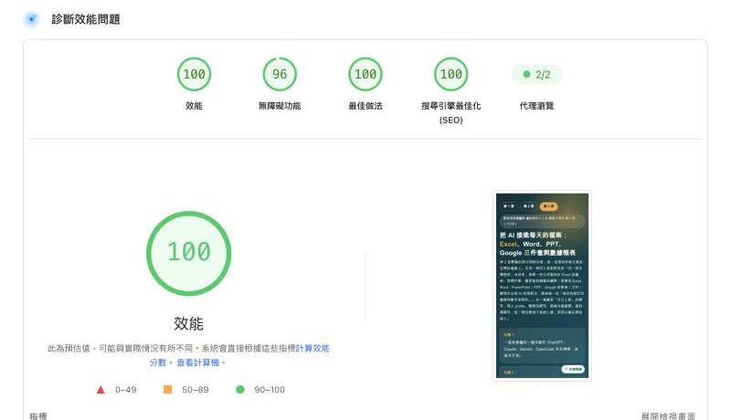
1 第 7 項實測：pagespeed.web.dev 貼上本講義網址，行動裝置：效能 100、無障礙 96、最佳做法 100、SEO 100。不到 90 的項目，把它列的建議整段貼給 AI 改。課堂做法：上傳成功後不要急著發 QR，先把這段提示語丟給 AI 跑一遍、再跑一次 PageSpeed，兩個都綠了才算「上線」。
簡報這一頁 ▶
4 / 13
網
今天 ②：網頁型簡報、目標九宮格、AI 做報名表 兩個課堂實作加一個示範。每個都是「提示語 → AI 寫程式 → 存成 index.html → 開一個新倉庫上傳 → Settings → Pages 開啟」，各自有網址。
實作 1｜網頁型簡報（30 分鐘，含講解；動手約 15 分）
一個 HTML 檔就是一份能翻頁、能投影、手機能開的簡報；這堂課每個主題上方的重點畫面就是這樣做的。和 PowerPoint 的差別：任何瀏覽器都能開、一個網址加 QR 就能分享、互動想得到就做得到，但美編要用「說」的改。適合團體衛教、病友教室、手機閱讀。
請幫我做一個單一檔案的 HTML 網頁型簡報，檔名 index.html（會放在自己的 GitHub 倉庫 slides），CSS 和 JavaScript 都寫在同一個檔案裡，不要用外部圖片。
主題：低血糖的辨識與處理（給糖尿病病人與家屬的團體衛教，約 15 分鐘）
對象：60～80 歲長者與陪同家屬，部分視力不佳
共 8 頁：1 封面 2 什麼是低血糖（數字 70） 3 常見症狀（6 個，用大圖示） 4 立刻做的三件事（15 克糖的例子） 5 15 分鐘後再測一次 6 什麼情況要送醫 7 怎麼預防（吃藥、進食、運動時間） 8 翻牌問答 3 題
設計要求：
1. 16:9 版面，字體至少 28px，標題 48px 以上，高對比，一頁一個重點
2. 鍵盤左右鍵、點擊螢幕左右半邊都能翻頁，手機可左右滑動
3. 第 8 頁的問答卡點一下翻面顯示答案
4. 右下角顯示頁碼，有「全螢幕」按鈕
5. 最後一頁放「本簡報使用 AI 協助製作，內容請以醫療人員說明為準」
請先列出 8 頁的標題與重點給我確認，再寫程式。
四個關鍵 ：單一檔案（才能直接拖上 GitHub）；頁數與每頁內容先列出來（AI 先給大綱再寫程式）；長者規格寫成數字（28px、48px、高對比）；互動寫清楚動作（點一下翻面、左右滑動）。內容先用 AI 起草，數字與處置一定要用院內衛教單核對 再上線。
做法 ：貼到 Claude（右側直接預覽）或 Gemini「任務」→ 它列大綱 → 你確認 → 它寫程式 → 存成 index.html → 建新倉庫 slides 拖進去 → Settings → Pages 開 main / root → 網址 …/slides/。
簡報這一頁 ▶
實作 2｜目標九宮格（25 分鐘，含講解；動手約 15 分）
大谷翔平高一寫的 81 格：正中央大目標，周圍 8 格是面向，外圈 64 格是每天做得到的小事。搬到糖尿病衛教：中央「3 個月後 HbA1c 7% 以下且無低血糖」，八個面向：飲食、運動、用藥、血糖監測、足部照護、情緒與睡眠、回診與檢查、家人支持。怎麼和病人一起填 ：中間 9 格由衛教師帶著填（有數字、有期限）；外圈不必填滿，先挑最有把握的 2～3 個面向，每格一件「這週就做得到」的事；列印貼冰箱，完成一件打一個勾。AI 的位置：出 64 個候選小行動，人做決定。
請做一個單一檔案的 HTML 網頁「目標九宮格」，檔名 index.html（會放在自己的 GitHub 倉庫 mandala），CSS 與 JavaScript 寫在同一檔案，不用外部套件。
功能：
1. 畫面是 9×9 的 81 格（3×3 個大區塊，每區塊 3×3 小格）。正中央那格是「大目標」，它周圍 8 格是「面向」，每個面向會自動同步顯示在對應外圍區塊的中心格；其餘 64 格是「小行動」
2. 每格都可以直接打字，輸入後自動存在瀏覽器（localStorage），重新整理不會不見
3. 小行動格右上角有一個打勾按鈕，勾了變淡綠色，頁首顯示「已完成 N / 64」
4. 有一個下拉選單可以套用範本：「糖尿病自我管理」（目標：3 個月後 HbA1c 7% 以下且無低血糖；八個面向：飲食、運動、用藥、血糖監測、足部照護、情緒與睡眠、回診與檢查、家人支持；請幫每個面向寫 8 個長者做得到的小行動）
5. 「列印 A4」按鈕：橫式 A4 一頁印完，隱藏按鈕
6. 「下載圖片」按鈕：把九宮格畫成 PNG 下載
7. 手機也能用：格子字體自動縮小，不會左右捲動
8. 配色：中央橘色、面向淡藍綠、其他白色；字體用系統中文字體
頁尾寫「本頁使用 AI 協助製作」。請先確認功能清單，再寫程式。
示範成品：mandala.html （手機掃開來玩）。常見修改指令：「面向那 8 格字再大一點」「加『複製成文字』按鈕方便貼 LINE」「加填寫人與日期欄位」。填寫人只寫稱呼與日期，不寫病歷號或完整姓名 ；資料只存在填寫者自己的瀏覽器。
簡報這一頁 ▶
示範｜AI 做一份「能上傳檔案」的報名表
路線 A｜AI 寫程式＋Apps Script
路線 B｜Google 表單＋Gemini
路線 C｜Tally／Jotform／SurveyCake
個資與上線前檢查 ：表單上寫清楚個資告知（主辦單位、目的、資料類別、保存期間、當事人權利）；病歷、檢驗報告屬特種個資，報名表盡量不要收；上傳資料夾不要設「知道連結的任何人」；自己先送一筆假資料；活動結束封存部署並依告知期間刪除檔案。進階 ：把前端 index.html 放在自己的倉庫 form（網址 …/form/），資料送進 Apps Script（fetch 送 JSON、檔案轉 base64），報名表就有自己的網址、和你的網站同一套風格；風險是 /exec 網址公開，要加報名代碼檢查與檔案限制（下一段有實測與完整提示語）。完整步驟、每一張實測截圖與可直接用的程式碼：mattsue1003.github.io/ai-form-upload 。
簡報這一頁 ▶ GitHub ＋ Apps Script 做法 ▶
5 / 13
網
今天 ③：參考風格做衛教單張、圖片、簡報、影片、動畫、音樂（終端機代理為第 4 堂預習） 上課示範為主。原則只有一條：風格可以學，作品不能抄 ；真人的臉不生圖、別人的作品與商標不上傳、提示語裡不寫特定歌手畫家品牌。
終端機代理：一句話做出一整個資料夾（第 4 堂教，先預習）
第 2 堂的 OpenCode 之外還有兩個免費的：Antigravity CLI （Google，指令 agy，2026/6 起取代 Gemini CLI；個人帳號免費）與 GitHub Copilot Free （VS Code 內的 Chat 切到 Agent；$0 不用信用卡）。Claude 桌面版 Code 分頁 也是同一類，但需要 Pro 以上方案。流程都一樣：開練習資料夾 → 登入 → 用中文交辦「建立 site、slides、mandala 三個資料夾，各一個 index.html」→ 檔案直接出現 → 各自建倉庫拖上 GitHub。三個都會讀寫你指定的資料夾：只在練習資料夾裡用 ，不要在放病人資料的資料夾開啟。
簡報這一頁 ▶
圖片與簡報風格
圖片 ：ChatGPT 當主力（上傳 2 張參考圖，「用這個風格、不要複製內容，畫 6 張一組的低血糖症狀圖卡，先畫第 1 張確認」），Gemini 備援，Canva 拆圖層改字排版。簡報風格 ：截 2～3 張你喜歡的簡報，請 AI 先用文字描述「版型、配色色碼、字級、節奏」，不描述內容，再用這個風格做你的主題；同一段風格描述存起來，科內素材就會長得像一家人。怎麼拆出好風格 ：「好風格從哪來」重點畫面把一個有設計感的網站拆成六條規則（三個顏色角色並給色碼、大標題換色強調 3～5 字、等寬字體小標、細邊深色卡片、留白、淡格線背景），附一段可直接用的風格提示語。
好風格六條規則＋提示語 ▶
簡報這一頁 ▶
衛教單張：拿一張你喜歡的海報，拆風格、換內容
① 請 AI 只描述風格、不描述內容 （底色、插畫手法、構圖路徑、人物比例、點綴元素、留白位置），例如從一張旅遊海報拆出：粉藍平塗底、扁平無描邊插畫、S 形道路串場景、人物比例誇張、雲朵氣球點綴、左上留白放標題。② 風格描述＋你的衛教三步驟生圖，要求圖中不要文字、品牌、真人，並指定留白。③ Canva 開 A4 疊上標題（48pt 以上）、內文（14pt 以上）、院徽、免責與日期。④ 送審三問。參考海報若是圖庫素材只能自己看，不放進公開成品。
完成版單張（底圖＋三層文字） ：大標題與「什麼時候要處理」一句、三張步驟卡（編號、動作、怎麼做）、隨身提醒與免責日期。底圖左欄、文字卡右欄；文字是用程式疊上去的，課堂上在 Canva 做一樣的事。點圖放大可直接列印 A4。
底圖與操作畫面（2026 年 11 月實測） ：點圖放大。
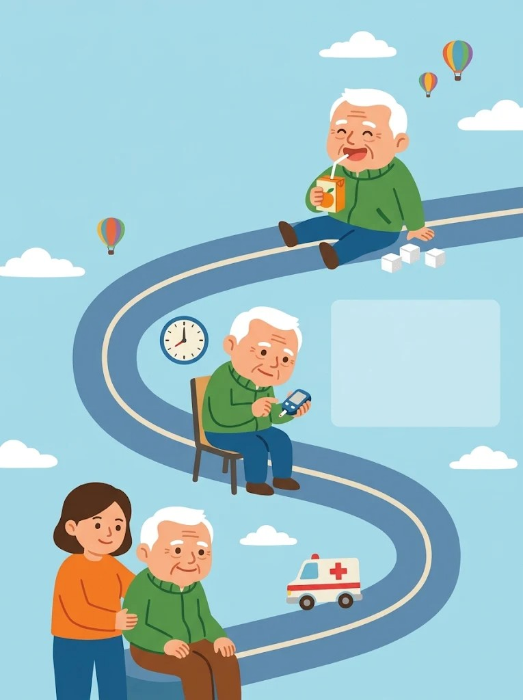
1 Gemini ：最照提示語做，S 形路、三場景、右側真的留了文字區；色彩淡雅。第一次只回「提示詞」，再說「直接生成圖片」才出圖。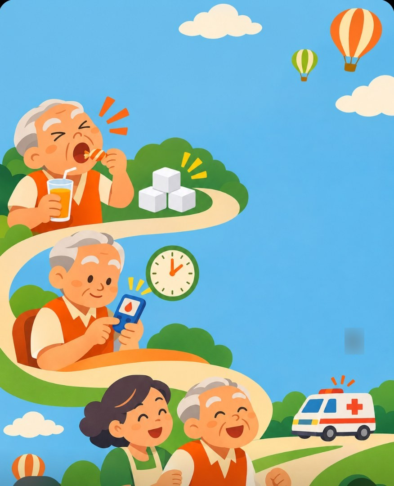
2 ChatGPT ：色彩最飽和、表情最生動，但沒留白，要在 Canva 另加色塊壓字。第一次出錯，重送一次就好。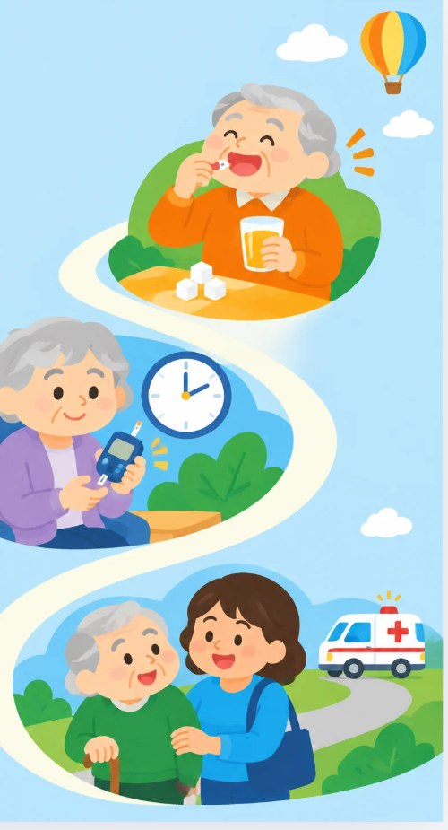
3 Canva AI （canva.com/ai）：柔和乾淨、上方留白最多；生完直接在 Canva 裡按「編輯設計」疊字、加院徽、匯出 PDF。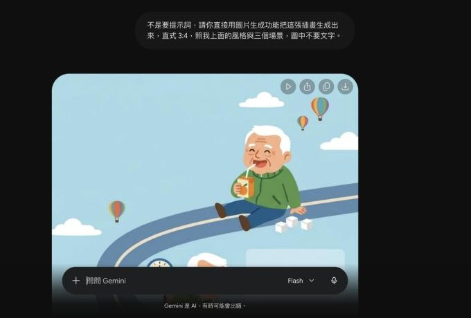
4 Gemini 操作畫面：在對話框直接輸入提示語；圖右上有下載鈕。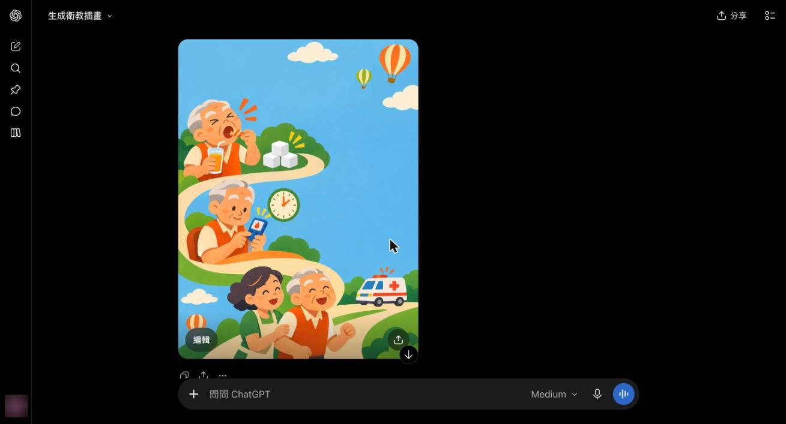
5 ChatGPT 操作畫面：生成後圖左下「編輯」可圈選局部修改，右下箭頭下載。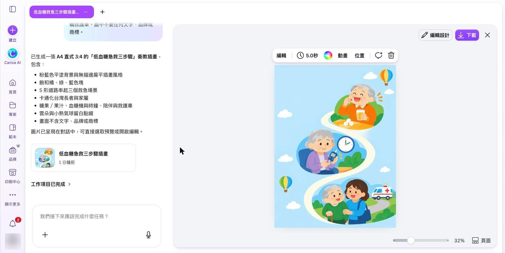
6 Canva AI 操作畫面：左邊對話、右邊預覽；「編輯設計」直接進 Canva 排版，「下載」匯出。
簡報這一頁（含提示語）▶ 三家結果比較 ▶
示範成品：30 秒衛教短片「低血糖怎麼辦？救急三步驟」
你的瀏覽器不支援影片播放，點此下載 。 三張 AI 底圖（Gemini、ChatGPT、Canva AI）各取一段場景 → 排成 5 張 16:9 場景圖（標題、三步驟、收尾，字 54px 以上）→ 每張慢慢放大、場景間淡入淡出 → 程式合成的柔和和弦配樂（無人聲、無版權問題）→ 匯出 MP4 上傳到播放頁所在的倉庫，網頁用 <video> 嵌入。有聲版 70 秒：旁白用微軟台灣口音語音「曉臻」（edge-tts，免費），五句腳本各對齊一個場景；另有 31 秒無旁白版 下載 。學員版 ：Google Vids 或 Canva 新增 5 張圖卡 → 打字幕 → AI 配音 → 免費配樂 → 匯出，同樣結構 10 分鐘內做完。下載有聲版 MP4（10 MB）
簡報這一頁 ▶
Gemini 直接生成影片（Veo）：實測 10 秒衛教動畫（2026 年 11 月）
你的瀏覽器不支援影片播放，點此下載 。 對話框左邊「＋」→「建立影片」→ 貼構想（風格、角色、動作、鏡頭、不要文字真人）→ 選橫向／直向 → 送出。實測等了約 4 分鐘，中途畫面重整過一次，不要離開對話 ；做好會出現「您的影片已準備好」，10 秒、1280×720，可下載，也會存在左側「媒體庫」。一次一段 8～10 秒、畫面沒有字，字幕與旁白到 Vids／Canva 加；免費帳號額度少、AI Pro 每天數支。上面就是這次實測的成品（下載 MP4，3 MB ）。
請生成一支 8 秒、橫式 16:9 的衛教短片。扁平卡通插畫風格，粉藍色平塗背景，飽和的橘、綠、藍色塊，不要真人。畫面：一位卡通化的台灣長者坐在椅子上，有點頭暈冒冷汗，桌上放著三顆方糖和一杯果汁；他拿起果汁慢慢喝一口，表情逐漸放鬆微笑；旁邊一個時鐘輕輕轉動。鏡頭緩慢推近，溫和、安心的氛圍。畫面中不要出現任何文字、品牌或商標。
簡報這一頁 ▶
旁白：台灣口音的 AI 語音，以及克隆自己的聲音
免費、不用帳號 ：微軟語音（edge-tts）有三個台灣口音聲音：曉臻 zh-TW-HsiaoChenNeural（女）、曉雨 zh-TW-HsiaoYuNeural（女）、雲哲 zh-TW-YunJheNeural（男），示範影片的旁白就是曉臻。不會裝就對 Claude Code 或 Antigravity 說一句：
請幫我安裝 edge-tts，把 ./旁白.txt 的五句話用 zh-TW-HsiaoChenNeural、語速 -8% 分別轉成 vo1～vo5.mp3，再用 ffmpeg 對齊五張場景圖合成 1080p 影片，配樂音量壓低。
克隆自己的聲音 ：ElevenLabs（美國公司）。錄 1～2 分鐘自己用台灣口音念的衛教稿 → Voices → Instant Voice Cloning；之後打中文就用你的聲音念，口音跟著樣本走（Multilingual v2 支援中文）。克隆需 Starter 以上方案，免費方案只有內建聲音。裝進 Claude：連接器目錄搜 ElevenLabs（官方 hosted MCP，用 OAuth 登入）；或 Claude 桌面版「設定 → 開發人員 → 編輯設定」加 uvx elevenlabs-mcp 與 ELEVENLABS_API_KEY，之後直接說「用我的聲音把這段旁白轉成 mp3」。
選擇原則 ：要台灣口音就用台灣口音的樣本或 zh-TW 語音，不選 zh-CN；避開中國系模型（GPT-SoVITS、CosyVoice、Fish Audio、ChatTTS）：口音偏大陸、資料去向不明。其他可用：Canva AI 配音（中文台灣）、Google Vids 旁白、Azure AI 語音（微軟，同一批 zh-TW 聲音加自訂聲音）。聲音也是個資 ：只克隆自己的聲音或取得書面同意，片尾標「AI 配音」，錄音檔不放公開倉庫。
簡報這一頁 ▶
影片：免費路線是「圖卡 ＋ 字幕 ＋ 配音」
AI 生影片多半要付費（Gemini Veo 在 AI Pro；ChatGPT 自 2026/4 起不能生影片）。免費能做的：Google Vids （圖卡＋旁白＋字幕 3 分鐘做完，衛教短片首選）、Google Flow （生一段拍不到的 8 秒畫面）、Edits （剪自己拍的操作影片）。先用 AI 寫 30 秒微劇本（秒數｜畫面｜旁白｜字幕），再去排。
請幫我寫一支 30 秒衛教短影音的微劇本，主題「低血糖時先做三件事」，對象是 65 歲以上糖尿病病人與家屬。
（我先貼了 3 張參考短片的截圖）請先描述這支影片的結構、畫面風格與字幕樣式，然後用同樣的結構與風格寫我的腳本。結構：
- 0–3 秒：一句抓住注意力的問題（口語、台灣用語）
- 4–24 秒：三個重點，每個重點一張圖卡 + 一句旁白不超過 15 字
- 25–30 秒：一句行動呼籲 + 「請以醫療人員說明為準」
請用表格輸出：秒數｜畫面（給生圖用的描述，卡通長者、不要真人）｜旁白｜字幕。
旁白請用溫和、慢速的語氣，之後我會用 Canva 的 AI 配音唸出來。
簡報這一頁 ▶ 影片工具比較 ▶
動畫：Claude 桌面版 Code 分頁七步做出教學動畫 MP4
想要「會動的衛教動畫」：下載桌面版點 Code → 建空資料夾選 Local → 第一句叫它檢查環境 → 先交「知識點檢核表.md」→ 讓它提 5 個開場你挑 → 它寫旁白、做動畫、配樂、每幕自己截圖檢查、匯出 MP4 → 做一頁 index.html 嵌入播放，開倉庫 video 上傳。需要 Claude Pro 以上；免費帳號用 Antigravity CLI 或 Copilot Free 走同一套七步。
這個資料夾裡有「知識點檢核表.md」。請先逐條讀完並確認你理解，再做一支 60 秒、16:9 的衛教教學動畫「低血糖怎麼辦」，對象 65 歲以上病人與家屬。
步驟：1. 先給我 5 個不同的開場讓我挑；2. 我選定後，寫逐幕腳本（秒數｜畫面｜旁白｜字幕）給我確認；3. 再寫程式做動畫：卡通長者、不出現真人臉孔與品牌，字幕至少 40px、高對比，旁白慢速；4. 每一幕匯出後自己截圖檢查文字有沒有跑版、數字是否與檢核表一致；5. 配輕柔背景音樂與簡單音效，音量低於旁白；6. 匯出 MP4（1920×1080）到 ./成品，並寫一份「操作紀錄.md」。全部在本機處理，不上傳任何檔案。
簡報這一頁 ▶
音樂：30 秒配樂免費就有
Gemini（Lyria） ：直接說「幫我做一段音樂」，免費可做 30 秒、可下載 MP3，需年滿 18 歲。Suno ：免費約每天 10 首，非商業使用，可寫歌詞做整首「量血糖歌」。描述用「曲風、速度、樂器、情緒」，不寫歌手名；院內公開播放前確認方案授權。
請做一段 30 秒的背景音樂，給糖尿病衛教短影音用。
風格描述（不要模仿特定歌手）：輕快但不吵的木吉他與烏克麗麗，每分鐘約 95 拍，加一點手拍與輕鼓，情緒是「溫暖、放心、早晨」，沒有人聲，結尾淡出。
適合 65 歲以上觀眾，避免高頻刺耳的音色。
簡報這一頁 ▶
素材送審前的自檢表
高齡友善 ：內文字至少 28px（投影）／14pt（紙本）、高對比不用淡灰字、一頁一個重點、影片旁白慢速有字幕。肖像與版權 ：沒有真人臉、沒有別人的作品商標歌曲、參考風格沒有複製內容、音樂方案允許這個用途。內容正確 ：數字（70 mg/dL、15 克）用院內衛教單核對、處置流程與科內一致、標示「使用 AI 協助製作」與「請以醫療人員說明為準」。
簡報這一頁 ▶
6 / 13
1
四工具對照表：同一招，在哪裡按？第 4 堂預習 印這一頁就夠了。名稱若改版，記住「功能」比記住按鈕重要。
步驟 ChatGPT Claude Gemini OpenCode 讓 AI 懂你 個人化 → 自訂指示／記憶（快速回答關閉） 設定 → 帳戶 → 給 Claude 的指示；記憶 個人化智慧服務 → 給 Gemini 的指令 資料夾裡的 AGENTS.md 想久一點 推理強度 投入程度（舊稱延伸思考） Pro 模型／思考程度 換成較強的模型 不留記錄 暫時對話 無痕聊天 臨時對話 開新 session；資料留在本機 製圖 建立圖像＋編輯圈選 Artifacts 圖卡（HTML／SVG）、Canva 連接器 建立圖像（Nano Banana） 用程式畫數據圖表，存成 PNG 寫作區塊 寫作區塊（舊稱 Canvas） Artifacts／Claude Docs Canvas（匯出 .md 或雲端硬碟） 直接改資料夾裡的檔案 學習模式 打「/」→ 學習 學習樣式 引導式學習 —（用對話工具） 排程 左側「已排程」 排程任務（Pro 以上） 排定動作（付費） —（第 5 堂再談） 外掛 外掛程式 連接器 應用程式（Google 全家桶） 內建讀寫檔案、執行；可接 MCP 深度工作 Work 研究、Cowork 深入研究 主場：交辦整件事 專案 專案 專案 筆記本、技能 一個資料夾 大份 PDF 讀文字為主，圖表另截圖 先用 MarkItDown 轉 .md 再上傳 直接上傳；大量指引轉文字進 Gemini Notebook 叫它整個資料夾轉檔
ChatGPT 什麼時候用中文語音對話最自然；生圖後局部修改最順手；要一口氣做出整份檔案時用 Work。
Claude 什麼時候用長文寫作、改稿語氣、分析 Excel 與報表、做互動小工具（第 5 堂）。
Gemini 什麼時候用已在用 Google 帳號、Chrome、雲端硬碟；衛教圖卡初稿；深入研究後一鍵轉成資訊圖表。
OpenCode 什麼時候用一次要處理很多檔案、要產出檔案、同一套流程每季都要跑一次。前提永遠是：資料夾裡只有去識別化的資料。
提醒： 三個對話工具的差距大概是 95 分和 98 分。與其糾結哪個最強，不如挑一個每天用；OpenCode 則是另一種用法，不是第四個聊天視窗。提示詞基本功在四個裡都一樣。
7 / 13
2
課堂實作：個案照護數據整理、品質指標與報表自動化 把前面學的招式用在課綱要求的五件事上。一份合成資料的 Excel 模板，從檢查到回饋單一路走完。
練習檔：糖尿病照護品質指標報表與個案回饋單（合成資料） 60 位虛構個案、4 季資料，只有代號。五個工作表：使用說明、指標報表、資料檢查、個案回饋單、原始資料（＋指標設定）。以後每季貼新資料就能重複套用。
下載 Excel 練習檔
課綱五項，各用哪一招、對到模板哪一頁
課綱項目 用今天的哪一招 模板對應 提示詞 ① 去識別化檢查流程 去識別化工作台 （整份檔案）；自訂指示第 6 條「原始資料」只有代號欄 — ② 數據清洗、欄位確認、異常值 AMA 反問法：先問、不算 「資料檢查」工作表會亮燈 Ⓐ ③ 分組平均、達標率、前後期比較 人事時地物＋Why 「指標報表」選季別自動更新 Ⓑ ④ 圖表選擇原則與驗算 要它說明選圖理由＋列分子分母 「指標報表」趨勢圖 Ⓒ ⑤ 報表模板與個案趨勢回饋單 專案／筆記本；OpenCode 整件交辦 「個案回饋單」選代號印 A4 Ⓓ
① 上傳前的去識別化檢查（三步）
整份檔案先過工作台： Word、Excel、PDF、照片、截圖都可以直接丟進「去識別化工作台」，自動標出姓名、病歷號、身分證、生日、電話、地址，換成「個案A」「家屬B」，下載乾淨的版本人工再看一遍： 自動偵測一定有漏網，簽名、照片要手動遮；代號對照表留在院內電腦確認院內規範： 合成資料今天隨便用；真實資料依本院規定，不確定就不要上傳
長照資料去識別化｜個資保護工作台 全部在你的瀏覽器裡處理：不上傳、沒有伺服器、工具本身不用 AI。可自訂稱呼、年齡組距、日期與地址的粗細。第 1 堂的「去識別化小幫手」處理純文字，這一個處理整份檔案。
開啟去識別化工作台
④ 圖表選擇原則（口訣）
想說的事 用什麼圖 幾組比大小 長條圖（分組達標率） 隨時間變化 折線圖（四季趨勢） 佔比 堆疊長條；圓餅圖只在 3 類以內 前後期差多少 並列長條＋標出差異百分點
驗算方法： 挑一項指標，用 Excel 篩選自己數分子、分母，和 AI 算的比率一致才交出去。
Claude
Gemini
ChatGPT
OpenCode
開一個新專案「品質指標」，專案指示貼上自訂指示，知識區放「指標設定」表的截圖或文字 拖入 Excel 檔，依序貼 Ⓐ→Ⓑ→Ⓒ→Ⓓ 它會實際跑計算；要圖時說「做成圖表 Artifact」 對話框「＋」上傳 Excel（或從雲端硬碟選） 依序貼 Ⓐ→Ⓑ→Ⓒ→Ⓓ，結果可要求「匯出到 Google 試算表」 也可以在 Google 試算表裡直接開右側 Gemini 面板提問 對話框「＋」上傳 Excel 依序貼 Ⓐ→Ⓑ→Ⓒ→Ⓓ，它會用內建分析工具計算 要正式報表時改用 Work，指定輸出成簡報 把 Excel 放進練習資料夾，在 OpenCode 打開該資料夾 把 Ⓐ～Ⓓ 一次 貼上，並加一句「每一步做完先回報，等我確認再往下」 它會把比較表、圖檔、摘要與回饋單存在資料夾裡；打開檔案核對，再叫它修 Ⓐ 資料清洗與異常值（AMA：先問、不算） 這是去識別化的合成資料，一位個案一季一列。請先不要計算，先告訴我：
1. 每個欄位的意思與資料型態；
2. 代號＋季別重複的列、每一欄的缺漏筆數、超出合理範圍的數值（HbA1c 4–15%、收縮壓 70–250、舒張壓 40–150）；
3. 在你開始分析之前，盡量問我問題，確認每個指標的分子、分母定義。
Ⓐ 的實際執行畫面（ChatGPT 工作模式，2026 年 11 月）
講師把課程模板（合成資料）上傳給 ChatGPT，貼上 Ⓐ。點圖可放大。
① 上傳＋貼提示詞
② 抓到異常值
③ 反問定義
1 「工作」模式，「＋」上傳 lesson2-template.xlsx，貼上 Ⓐ 送出。約 2 分鐘完成。
1 它找出模板裡故意埋的兩個錯誤：HbA1c 75%、收縮壓 1380（多半是 7.5、138 少打或多打一位數，要回原始紀錄確認），並寫明「沒有替這兩個值更正或排除」。這就是要你先問、不要先算的原因。
1 它列出 10 個指標的分子、分母草案，再反問：剛好 7.0% 算不算達標？異常值要不要排除？血壓分母是否要兩個值都有？回答完才開始算。
Ⓑ 分組與前後期比較（人事時地物＋Why） 這份分析是給糖尿病中心主任在品管會議看的，目的是決定明年衛教人力優先投入哪個年齡層。
請計算最近一季與前一季的 HbA1c < 7%、血壓 < 130/80、LDL < 100 達標率，按年齡組與衛教師分組，
表格欄位：指標、分組、分子人數、分母人數、比率（%，小數 1 位）、前後期差異（百分點）。最後指出變化最大的兩組。
Ⓒ 圖表與驗算 請為上面的結果各選一種圖：四季趨勢用什麼圖、分組比較用什麼圖，先說明選圖理由再畫。Y 軸 0–100%，每個點標數值。
接著自我驗算：隨機挑 2 組，列出分子、分母、篩選條件與計算過程，讓我能回到 Excel 用篩選功能手動核對。
Ⓓ 個案趨勢回饋單 根據下列一位個案近四季的 HbA1c、血壓、LDL、低血糖次數，寫 3 句給個案本人看的回饋：
先肯定進步，再提醒一件最重要的事，最後給一個下次回診前做得到的小目標。
用長者聽得懂的口語，每句不超過 30 字，不提供藥物調整建議。
（貼上「個案回饋單」工作表中該個案的四季數值）
每季重複套用： 新一季資料貼到「原始資料」最下面 → 「指標設定」補季別 → 「指標報表」選季別，指標、前期比較、趨勢圖自動更新；「個案回饋單」選代號就能印 A4。AI 只負責幫你檢查、解釋與寫回饋句，數字以模板公式為準。
真實資料的規則不變： 回到工作上要用真實資料時，先完成上面①的三步，並確認符合本院規範；個案代號不能回推到病人。
8 / 13
X
Excel × AI：六種搭配，從「幫我寫公式」到「整批檔案一次處理」 衛教師每天都在開 Excel。AI 不是要取代它，而是把你卡最久的那幾步接走。由淺到深六種，前三種馬上就能用。
用法 怎麼做 衛教師例子 適合工具 風險與對策 ① 寫公式、解釋公式 最安全、最常用 把需求用中文講，或把看不懂的公式貼給它 「A 欄是 HbA1c，B 欄是日期，幫我寫一個公式：近 90 天內 HbA1c<7 的人數」「這段 VLOOKUP 在做什麼？」 三家都行；Gemini 對 Google 試算表函數最熟 公式貼回去前，拿 3 筆已知答案的列驗算 ② 清理與整理資料 上傳檔案，請它統一格式、拆欄、找重複、標異常 「把『年齡組』統一成 <65／65–74／≥75」「日期有 2026/3/1 和 3-1-26 兩種，統一成 YYYY-MM-DD」「找出同一個案同季重複列」 ChatGPT 工作模式、Claude（會跑程式） 要它輸出改了哪些格 的清單，不要只給新檔；原檔留著 ③ 描述統計與樞紐 S 節的兩段提示詞 分性別、年齡層的達標率；每位衛教師的個案數 ChatGPT 工作、Claude 分析工具、Gemini 十條檢查；數字自己用 =COUNTIFS 抽查 ④ 畫圖表 請它用程式畫，或產出可編輯的 Excel 圖表 HbA1c 季趨勢折線圖、達標率長條圖，給它院內配色 ChatGPT 工作（可回傳 xlsx）、Claude（產 HTML 互動圖） 先指定圖型與分母；第 2 節 Ⓒ 有提示詞 ⑤ 產出整份 Excel 給規格，它直接建檔：多工作表、公式、下拉選單、條件格式 「做一個個案追蹤表：原始資料、每月統計（公式自動算）、異常值用紅底」 ChatGPT 工作、Claude、Gemini Notebook（匯出 .docx／.pptx）、OpenCode 打開檢查公式是「活的」還是寫死的數字；課程模板就是這樣做出來的 ⑥ 批次處理很多檔 把 30 個檔放進練習資料夾，交給資料夾代理 「把每個衛教師的月報合併成一張總表，欄位對齊，來源檔名放最後一欄」 OpenCode、Claude Code、Cowork 只指向去識別化的練習資料夾；先跑 2 個檔確認再跑全部
Excel 本身的 AI、以及 Google 試算表
Microsoft 365 Copilot in Excel： 在 Excel 右側對話，可直接對選取範圍做公式、分析、圖表。需 Microsoft 365 Copilot 授權（多為企業方案），院內多半沒有；若院內已授權且資安單位核可，資料留在院內租戶，較容易符合規範。Google 試算表 ＋ Gemini： 右上「Gemini」側欄可問資料、做表；儲存格裡可直接用 =AI("把 A2 的症狀描述分類成 低／中／高 風險") 這類函數；第一格按「生成並填入」後，往下拉整欄會自動顯示「生成中…」並逐格算出（僅供練習分類，不可取代臨床分級）。免費 Google 帳號可用部分功能。Excel 沒有 Copilot 時： 就是本節的做法：另存一份去識別化的檔，丟給 ChatGPT／Claude／Gemini，再把結果貼回。
上傳 Excel 前的三件事
去識別化： 刪掉姓名、病歷號、身分證、電話、出生日期；用「個案代號」取代。第 1 堂的工作台可以自動做。瘦身： 只留需要的工作表與欄位；刪掉隱藏工作表、備註行、合併儲存格（S 節「乾淨表」規格）。說清楚： 第一句話告訴它「哪張工作表、哪幾欄、每欄是什麼意思、單位」。AI 讀不到你的欄位定義表，就會猜。
通用開場（貼在任何 Excel 任務前面） 附件是去識別化的合成資料。只看工作表「原始資料」。欄位說明：個案代號（文字）、季別（2026Q1 格式）、HbA1c(%)（數值，合理 4–15）、收縮壓／舒張壓（mmHg）、LDL(mg/dL)。
做任何修改前先列出你打算改哪些儲存格；產出新檔時保留原工作表不動，結果放新的工作表。每個公式都用文字說明一次用途。
實際跑一次：ChatGPT 寫公式、解釋公式（2026 年 11 月，課程模板）
工作模式。兩個任務各花約 1 分鐘。
① 寫公式
② 解釋既有公式
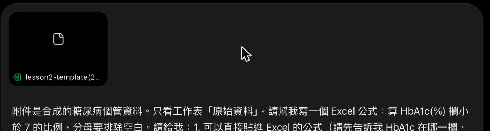
1 上傳 lesson2-template.xlsx，要它先說欄位與列範圍，再給公式、解釋每段、並用程式算出核對值。2 它先讀出 HbA1c 在 F 欄、F2:F217，給出 COUNTIFS／COUNT 公式、逐段解釋，並算出 46÷196＝23.47% 讓你貼進 Excel 後比對。注意最後一句：它主動提醒分母含 F114 的 75.0 異常值。
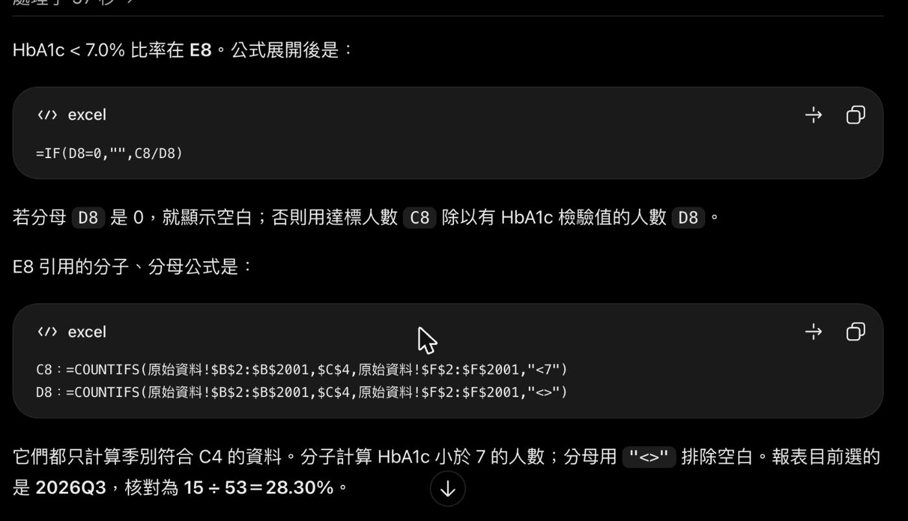
1 請它解釋「指標報表」的 HbA1c 達標率：它把 E8 的 IF 公式和 C8／D8 引用的 COUNTIFS 原文貼出，白話說明分子分母。2 它指出：分母沒有排除超出合理範圍的值（第 114 列的 75 會在選 2026Q2 時進入分母），且公式只讀到第 2001 列。這就是「解釋公式」比自己讀公式快的地方。
課堂體驗（10 分鐘）：三個小任務，用課程模板
寫公式： 「在『原始資料』工作表，幫我寫一個公式算 HbA1c<7 的比例，分母排除空白。」把公式貼進 Excel，和它說的數字對一次。解釋公式： 打開模板「指標報表」工作表，複製任一格公式貼給 AI：「這在算什麼？哪裡可能算錯？」小清理： 「『年齡組』欄有幾種寫法？統一成三類，列出你改了哪幾列。」
要講的結論： 公式與解釋幾乎零風險；清理與統計一定要「列出改了什麼、附程式」；整檔產出與批次處理最省力也最需要人工抽查。Excel 不會消失，會消失的是「自己卡兩小時寫公式」。
9 / 13
D
Word／PowerPoint／PDF × AI：三種檔案各自的搭配法 Excel 之外，衛教師每天碰的另外三種檔。原則一樣：先弄清楚「AI 讀得到什麼、能產出什麼」，再決定哪一段交給它。
先看支援表：三家讀得到、做得出哪些檔（2026 年 11 月，以當天畫面為準）
ChatGPT Claude Gemini OpenCode 上傳讀取 .docx／.pptx／.pdf 都收 .docx／.pdf 收；.pptx 不收 ，先用 MarkItDown 轉（B 節） .docx／.pdf 收；.pptx 經雲端硬碟最穩 資料夾裡任何檔；PDF／PPTX 先轉 .md 直接產出檔案 工作模式可產 .docx／.pptx／.pdf 下載 設定 → 功能 → 開「程式碼執行與檔案建立」後可產 .docx／.pptx／.xlsx／.pdf 產到 Google 文件／簡報再匯出；Gemini Notebook 可直接匯出 .docx／.pptx／.pdf 直接寫進資料夾 在原程式裡用 Microsoft 365 Copilot（Word／PowerPoint 內建側欄，需企業授權） Google 文件／簡報右上「Gemini」側欄 —
Word：公文、衛教文、計畫書
改寫與審稿： 貼整段或上傳 .docx，「改成長者版、每句 20 字內，列出你改了哪些句子 」。要它列清單，不要只給新檔。套格式： 給它院內公文或計畫書範本（去識別化），「照這份的標題層級、字體、段落格式產出新檔」。產出後用 Word 的樣式檢查。版本比對： 上傳新舊兩版，「列出差異，分成：意思改變／只是措辭」。可當第二道檢查；正式比對仍以 Word 的「比較」功能為準。翻譯與潤稿： IRB 英文摘要、外籍看護版單張；要求「保留醫學專有名詞原文並加註中文」。Copilot in Word 的差別： 直接在文件裡追蹤修訂、不用上傳下載，資料留在院內租戶（仍依院內資安規定）；沒有授權就走上傳路線。
坑： AI 產出的 .docx 有時把標題做成「加粗的內文」而不是標題樣式，目錄會抓不到。要求「用 Word 內建的標題 1／標題 2 樣式」。
PowerPoint：從大綱到可編輯的簡報
做新的（四條路，第 1、2 堂都教過）： Gemini 任務（版面最美，匯出 Google 簡報）；ChatGPT @Canva（第 2 堂第 8 節，每頁都是圖層）；Gemini Notebook「簡報」（最忠於資料）；ChatGPT 工作／Claude 直接產 .pptx（可編輯、版型樸素）。改既有的： 上傳 .pptx 給 ChatGPT「把每頁字數減半、補講者備忘稿」；Claude 不收 .pptx，先轉 .md 再請它產新檔。講者備忘稿與逐字稿： 「每頁寫 60 秒的口語講稿，對象是病友團體」，貼回備忘稿欄位。後製： 字擠、字太小 → DeckEdit 文字辨識改字（第 2 堂第 8 節）；要換圖 → Canva。圖片： 第 2 堂第 8 節的生圖拿來當每頁插圖；中文字由 PowerPoint 自己打，不要讓 AI 畫字。
坑： AI 產的 .pptx 常把文字做成一張圖或一個大文字框。驗收時點兩下看能不能選到單一文字；不能就回去要求「每個重點獨立文字框」。
PDF：讀、問、填、轉
讀與問： 短文件直接上傳；指引、評鑑條文這類要反覆用的，先 MarkItDown 轉文字（B 節）再丟進專案或 Gemini Notebook。防幻覺七步在 R 節 Q3。掃描檔（圖片型 PDF）： MarkItDown 轉出來多半是空的。做法：上傳 Google 雲端硬碟 → 右鍵「以 Google 文件開啟」會自動 OCR；或直接把頁面截圖給 ChatGPT／Gemini 看圖讀字，再人工核對數字。填表： PDF 表單（如轉介單、報名表）給 AI 看欄位，「列出每個欄位要填什麼、哪些我還缺資料」；實際填寫自己來，避免填錯格。合併、拆分、加浮水印： 這些是「操作」不是「理解」，交給 OpenCode／Claude Code 一句話做完（「把資料夾裡 12 份單張合併成一個 PDF，每份加頁碼」），比對話工具穩。產出 PDF： 一律先產 Word 或簡報再另存 PDF，才有可編輯的原稿。
坑： PDF 裡的表格最常被讀歪（欄位錯位）。數字類的表格，轉文字後自己開起來對一次，或請它「把表格原樣重現一次給我確認」。
實際跑一次：Word 改長者版 → 產 .docx（2026 年 11 月）
工作模式，上傳一份合成的足部照護衛教單張。產檔花了 4 分 24 秒，比純文字回答慢很多，上課要先按下去再講別的。
① 上傳與要求
② 產出與驗收
③ 接著做 PPT
④ 溯源檢查
1 要求：先說結構、改成長者版、每句 20 字內、不新增原文沒有的建議、用內建標題樣式、列出改動句。
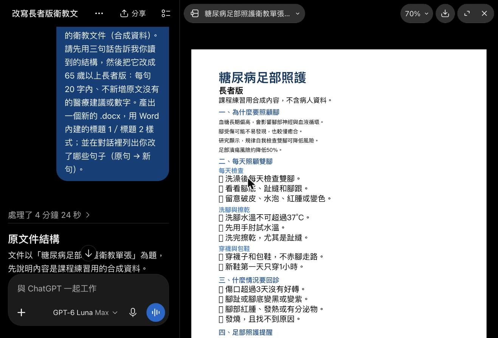
1 做好後右側直接預覽新檔：標題、長者版副標、分節標題，每句都縮短成一行並加勾選框。右上可下載或放大。2 對話裡列出「原句 → 新句」對照表，下方是可下載的 .docx 連結。它還主動備註預覽環境沒有中文字型、已指定微軟正黑體。
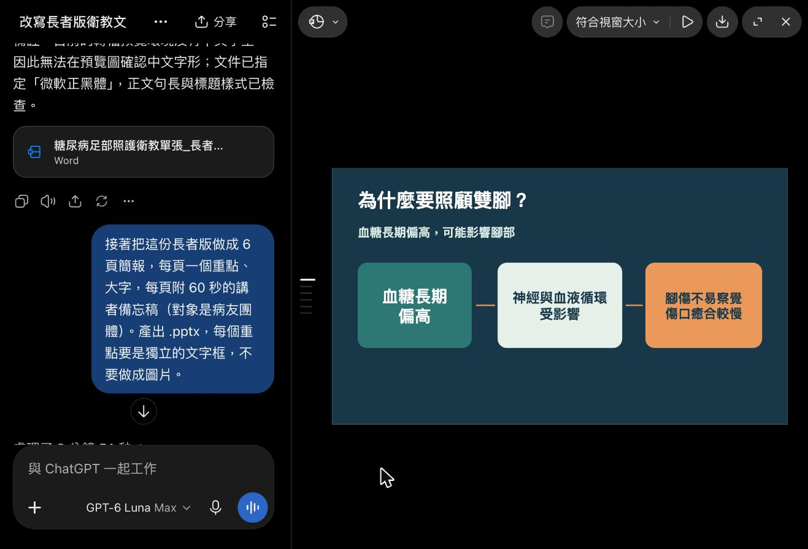
1 同一個對話接著說「做成 6 頁簡報、每頁附 60 秒備忘稿、獨立文字框」。花了 9 分 51 秒，右側預覽第 2 頁：一個大標題、三個方塊。2 完成訊息附 .pptx 下載卡。注意它主動把原文的「約 50%」拿掉並說明理由（查到的研究是衛教介入、不能歸因於單一行為）：這是好事，但也代表它改了內容，驗收時要看。
1 最後問「第 2 頁三個方塊各來自原文哪一句，找不到就說原文未提及」。它逐字引用原句對照，三個方塊都能對回同一句。這一步就是 PDF／文件防幻覺的第 4 步。
課堂體驗（10 分鐘）：同一份衛教文走三種檔
Word： 上傳一份已公開的衛教單張 .docx，「改成長者版，列出改動句子」。下載新檔，檢查標題樣式。PPT： 接著說「把長者版做成 6 頁簡報，每頁一個重點＋講者備忘稿」。ChatGPT 工作模式或 Claude 直接產 .pptx；開起來點文字框驗收。PDF： 把簡報另存 PDF，丟回去問「第 2 頁的內容來源是原文哪一句？」。看它能不能逐字指回原文（實測見上方 ④）。
通用提示詞與界線
三種檔都適用的開場 附件是去識別化、可公開的衛教文件。請先用三句話告訴我你讀到的結構（有幾個段落／頁／表格），確認無誤我再給任務。
之後每次修改都要：1. 列出改了哪裡；2. 不新增原文沒有的醫療建議或數字；3. 產出檔案時用內建樣式（標題樣式、獨立文字框），不要做成圖片。
病歷、公文正本、含個資的 PDF：不上傳。要處理就先去識別化，或用院內授權的 Copilot。
任何要送出去的文件：AI 產出 → 你逐段看 → 你簽名。這條在三種檔都一樣。
10 / 13
W
Google 試算表／文件／簡報 × Gemini：不用上傳下載，AI 就在檔案裡 Excel、Word、PowerPoint 各有一個 Google 對應物，而且 Gemini 直接住在裡面。做法和前兩節一樣，只是少了「上傳、下載、貼回去」三個步驟。免費 Google 帳號就有一部分功能，講師帳號是 AI Pro。
對照表：同一件事，在 Google 裡怎麼做
Google 試算表（＝Excel） Google 文件（＝Word） Google 簡報（＝PowerPoint） 入口 右上 ✦ 開 Gemini 側欄；儲存格裡直接打 =AI(...) 右上 ✦ 側欄；空白頁底部的「使用 Gemini 撰寫內容」 新檔案一開就跳出 Gemini 起始畫面（簡報／投影片／圖片／資訊圖表）；右上 ✦ 側欄 最有感的功能 =AI("把這個症狀描述分成 低、中、高 風險", A2) 往下拉整欄會自動逐格生成、批次分類；側欄「建一個季報範本」會自己建工作表、填範例、寫達標率公式、上格式側欄一句話直接寫進文件，含標題樣式與大綱；選取文字後「幫我改寫」 「簡報」模式先問你風格與核心內容（勾選），列出大綱讓你核准，再生成整份；「圖片」用 Nano Banana Pro 生插圖 和 Excel／Word／PPT 路線的差別 不用上傳；公式直接寫進格子；但 =AI() 每格都算一次額度，量大時慢 不用下載 .docx 再開；產出就是可編輯文件；要給別人 Word 檔再「下載為 .docx」 產出直接可編輯、每個文字框獨立；版型比 Gemini 任務模式樸素，比 ChatGPT 產 .pptx 快很多（約 2 分鐘 vs 10 分鐘） 實測踩到的坑（2026/11） =AI() 要按「生成並填入」才會跑；參照錯欄會回「請提供症狀描述」而不是報錯 側欄與「幫我寫」目前不支援中文提示詞 （回「目前不支援你輸入的語言」）。解法：用英文下指令、在指令裡寫 in Traditional Chinese，它就會用繁體中文寫進文件側欄中文提示詞可以用，但它自己的步驟文字偶爾跳出簡體字（「审核并优化演示文稿」）；生成前的問卷是中英夾雜 資料去哪裡 檔案本來就在 Google 雲端硬碟；Gemini 讀的是這個檔和你勾選的來源（雲端硬碟／Gmail／Chat／網頁）。院內資料依資安規定；練習用合成資料。
Gemini 試算表：=AI() 與側欄建範本（2026 年 11 月實測）新開一個試算表，兩個動作各約 1 分鐘。
=AI() 函數
側欄建範本
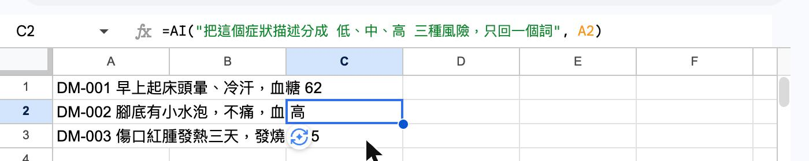
1 C2 打 =AI("把這個症狀描述分成 低、中、高 三種風險，只回一個詞", A2)，按「生成並填入」，回「高」。往下拉整欄會自動顯示「生成中…」並逐格算出（見下方 GIF）。練習用分類，不是臨床分級：圖中三筆都被判「高」，連不痛的小水泡也是，真正的分級要由衛教師判斷。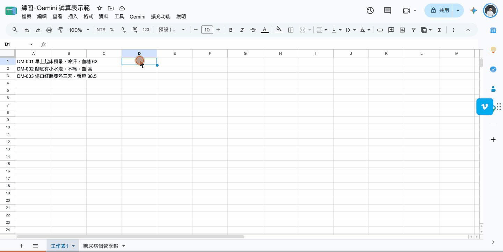
2 動畫：在 D1 打公式 → 選 D1 → 拖曳右下角小方塊到 D3 → 三格先顯示「生成中…」再變成結果。全程約 10 秒。
1 側欄說「建一個糖尿病個管季報範本，含達標率公式與 5 筆合成資料」。它先列步驟（建立工作表與資料結構 → 視覺化排版與驗證）等你按「核准」。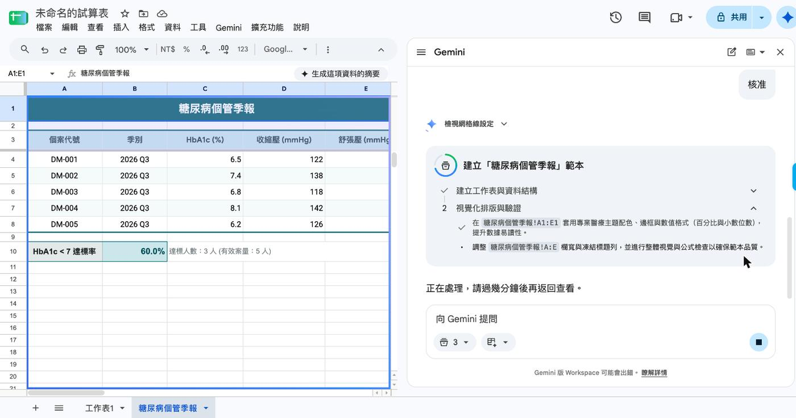
2 核准後約 1 分鐘：新工作表、標題列、5 筆範例、HbA1c<7 達標率 60% 的公式（COUNTIF／COUNT，分母排除空白）、醫療配色。
Gemini 文件：中文提示詞不支援、英文提示詞可以（2026 年 11 月實測）這個坑一定要先講，不然學員第一步就卡住。
入口
中文被擋
英文下指令
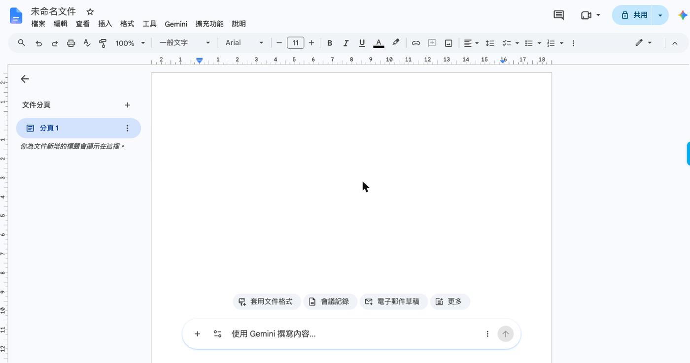
1 新文件底部有「使用 Gemini 撰寫內容」與快捷（套用文件格式、會議記錄、電子郵件草稿）；右上 ✦ 開側欄。
1 改成英文：Write a 150-word patient handout in Traditional Chinese (Taiwan)… 它直接把整份寫進文件，自動下標題「低血糖處理指南：15-15 法則」、三個小標、每句都短。
Gemini 簡報：起始畫面 → 細節 → 問卷 → 大綱核准（2026 年 11 月實測）Google 簡報的 Gemini 比另外兩個多了一段「先問你」的流程，和第 1 堂的 Gemini 任務模式很像。
① 起始畫面
② 細節與問卷
③ 大綱核准
④ 生成結果
▶ 全程動畫
1 新簡報一開就問：簡報（整份）、投影片（單張）、圖片（Nano Banana Pro）、資訊圖表、匯入、空白。選「簡報」。
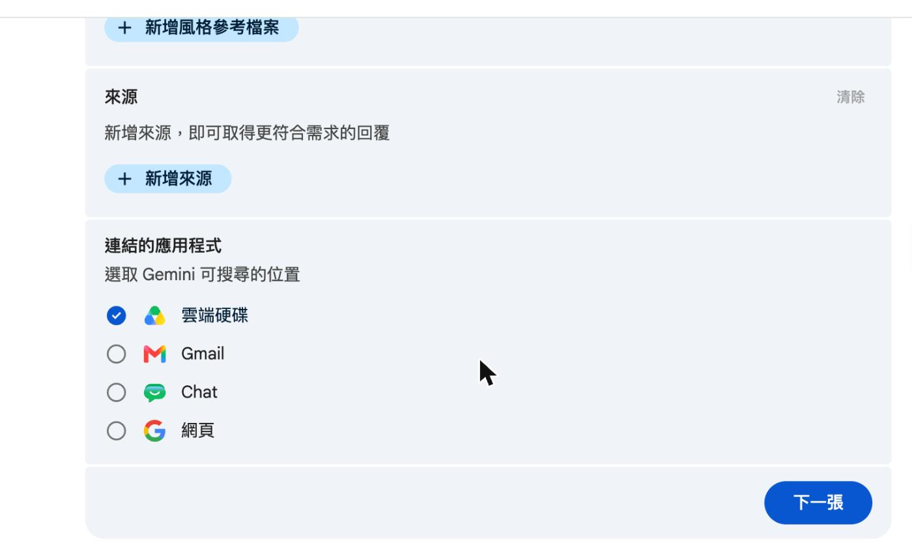
1 可加風格參考檔、來源檔，並勾選 Gemini 可搜尋的位置（雲端硬碟／Gmail／Chat／網頁）。練習時全不勾，或只勾放合成資料的資料夾。2 它先問風格（精簡／詳細）與核心內容（勾選），再動手。這就是 AMA 反問法被做進產品裡。
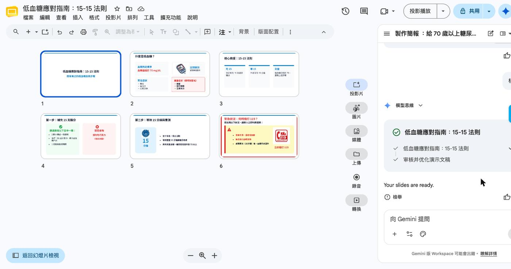
1 核准後約 2 分鐘，六頁全部生成：封面、什麼是低血糖、15-15 法則、第一步補糖、第二步等 15 分鐘、緊急撥打 119。側欄顯示 Your slides are ready。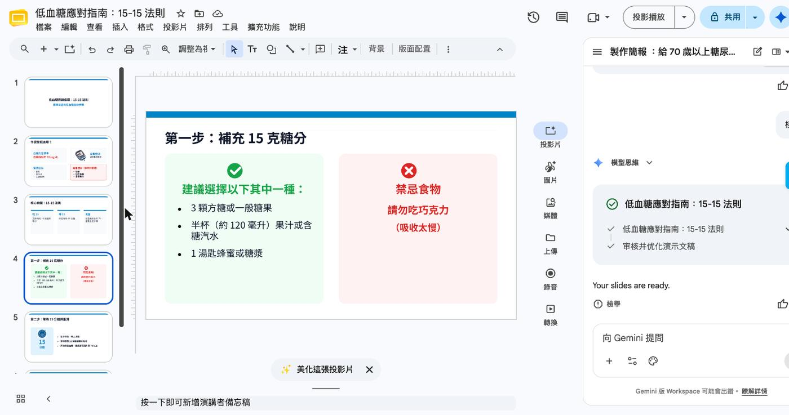
2 點開第 4 頁：標題、綠色建議方塊、紅色禁忌方塊都是獨立可編輯的文字框；下方還有「美化這張投影片」。版型樸素但直接能用。
1 動畫（約 4 分鐘壓成 50 格）：slides.new → 選「簡報」→ 中文描述主題 → 簡報細節 → 下一張 → 回答問卷 → 下一個 → 核准大綱 → 等待 → 6 頁完成。第二次實測主題換成「每天三件事照顧雙腳」，流程一模一樣。
課堂體驗（10 分鐘）
試算表： sheets.new → A 欄貼 3 句合成症狀描述 → B1 打 =AI("分成 低、中、高 風險，只回一個詞", A1) → 生成並填入 → 往下拉整欄，看它逐格顯示「生成中…」。文件： docs.new → 右上 ✦ → 用英文 說 Write … in Traditional Chinese → 看它直接寫進文件 → 選一段試「幫我改寫」（若回不支援語言，改用英文 Rewrite in Traditional Chinese）。簡報： slides.new → 選「簡報」→ 中文描述主題 → 回答問卷 → 核准大綱 → 等 2 分鐘 → 點任一文字框確認可編輯。
什麼時候選 Google 路線、什麼時候選 Office 路線
選 Google： 檔案本來就在雲端硬碟、要多人同時編輯、要快（簡報 2 分鐘）、要整欄批次分類。選 Office＋上傳： 院內規定用 Office、要交 .docx／.pptx 給別人、要用 ChatGPT 的工作模式查證內容（它會去查文獻並標示改了什麼）。兩邊都要記得： Gemini 在 Google 裡讀得到整個檔，不只是你選取的段落；開側欄前先確認檔案裡沒有個資。中文支援差異會變：上課前一天用自己的帳號再試一次 docs.new 的中文提示詞。
11 / 13
S
延伸：用 AI 做描述性統計，怎麼確保數字是對的 第 4 堂接在 Ⓐ 之後：平均、百分比、分組計數看起來最簡單，卻是最常「算錯而沒人發現」的地方。
為什麼會錯：AI 有兩種「算」
用看的算（心算）： 模型把表格當文字讀，直接「想」出一個平均。小表可能對，列數一多就會漏列、看錯欄、把 7.5 讀成 75。這是幻覺的來源。寫程式算： 模型寫一段 Python，由程式真的去加總。數字由程式產生，模型只負責寫程式和解讀。這條路才可靠。 三家在哪一條路：ChatGPT 工作模式與「進階資料分析」會跑程式；Claude 開「分析工具」（設定 → 功能）；Gemini 會自動執行程式碼；OpenCode 本來就在跑程式。看到它顯示程式碼或「正在分析」，才代表它真的算了。
Excel 還是 CSV？差別不在格式，在「乾不乾淨」
Excel 出錯的原因：多個工作表、合併儲存格、標題在第 3 列、備註行夾在資料中、公式與隱藏欄、數字存成文字、單位寫在格子裡（「7.5%」）。AI 讀錯範圍，數字就全錯。
CSV 為什麼穩：只有一張表、第一列就是欄名、沒有公式、沒有格式。所以「改用 CSV」有效，但真正有效的是「一個檔一張乾淨的表」。
乾淨表的規格：第一列欄名（不重複、不含空白與單位）、一列一筆、數字欄只有數字、日期統一 YYYY-MM-DD、缺值留空不要填「無」或「-」、沒有合併儲存格、沒有小計列。
非用 Excel 不可時：指定「只讀『資料』工作表，A1 到 H301」，並請它先印出讀到的前 5 列給你看。
直接上傳 Excel（.xlsx） 另存成 CSV 三家收不收 都收。ChatGPT 與 Claude 會在背景寫 Python 讀；Gemini 直接解析 都收，而且是三家最不會讀錯的格式 多個工作表 最常出事的地方 ：有的只讀第一張、有的全部讀進來混在一起、有的問你要哪一張。說明頁、樞紐表、圖表工作表都可能被當成資料不會有這問題：CSV 天生只有一張表（另存時 Excel 也只存目前這一張） 公式、合併儲存格、格式 公式可能讀到結果也可能讀到空值；合併儲存格會讓欄位錯位；「7.5%」可能被讀成 0.075 或 7.5 只剩純文字和數字，所見即所得 檔案大小、額度 同樣內容比 CSV 大好幾倍，大檔容易逾時或吃掉上傳上限 最小，880 列不到 50 KB 中文亂碼 不會 用 Excel「另存新檔 → CSV UTF-8（逗號分隔） 」才不會；選到舊的「CSV（逗號分隔）」中文可能變亂碼 結論 多張工作表、有格式的原始檔：先整理 ，只留一張乾淨的資料表再上傳，或在提示詞指名工作表與範圍 第一次算、要出數字給主任看，用 CSV 。練習檔 Excel 版在第 2 節，CSV 版在第 2 堂講義的練習資料區，兩種都下載就能試一次差異
多分頁 Excel 的安全做法（三步）： ① 在 Excel 把要分析的那張工作表右鍵「移動或複製 → 建立複本到新活頁簿」；② 新活頁簿裡刪掉標題列以上的說明、小計列、合併儲存格；③ 另存成「CSV UTF-8」再上傳。若一定要整本上傳，提示詞第一句寫：「這個檔有 N 張工作表，只分析『個案資料』這張 ，其他工作表忽略；開始前先告訴我你讀到幾列幾欄、欄名是什麼。」
十條檢查：每次請 AI 算數字都照做
# 要它做的事 抓什麼錯 1 先描述資料 再算：幾列幾欄、每欄名稱與型態、每欄缺值數、數值欄的最小／最大值 讀錯範圍、讀錯工作表、7.5 變 75 2 顯示程式碼 與程式輸出，每個數字旁附程式印出的原值確認是「算的」不是「想的」 3 每個比例寫明分子與分母 ，以及分母排除了誰 達標率的分母用錯（全部病人 vs 有檢驗者） 4 異常值先列出、不要自動排除 ，排除與否由你決定並記錄 它「好心」把 1380 丟掉，你不知道 5 缺值處理方式明說 ：忽略、補 0、補平均，三者結果差很多 平均值被缺值補法改變 6 分組統計時附每組人數 n ，n 小於 10 的組標記 一組只有 3 個人卻拿來比較 7 先不要四捨五入；最後呈現再統一小數位 中途進位造成加總不等於 100% 8 只做描述 ，不要它順便下「顯著」「有效」「因為」的結論 描述統計被偷渡成因果推論 9 自己抽查 3 個數字 ：用 Excel 的 =AVERAGE、=COUNTIF 或樞紐分析算一次比對；或請另一家重算最能抓到系統性錯誤的方法之一 10 結果表每一欄都要能回答「從原始哪一欄、用什麼規則算出來 」，請它附一張「欄位對照表」 一季後重跑時對不起來
實際跑一次提示詞①：ChatGPT 讀課程 Excel 模板（2026 年 11 月）
只要求「描述資料、不要算」。注意它做了什麼、沒做什麼。
結果摘要
欄位與異常值
程式碼
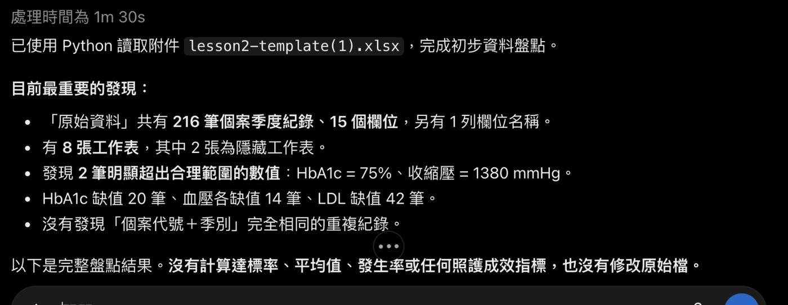
1 處理 1 分 30 秒。它先說「已使用 Python 讀取」，列出 216 筆、15 欄、8 張工作表（2 張隱藏）、兩個異常值、各欄缺值數，並強調沒有計算任何指標、沒有修改原始檔 。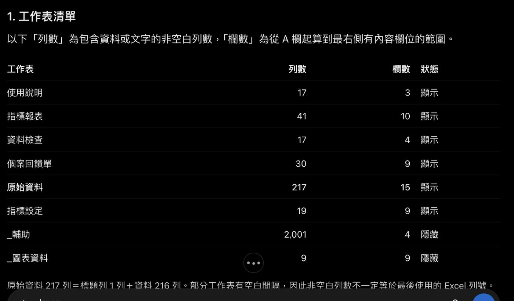
2 Excel 裡有 8 張工作表，含 2 張隱藏的「_輔助」「_圖表資料」。這就是「直接丟 Excel 容易錯」的原因：不先盤點，AI 可能讀到錯的那張。
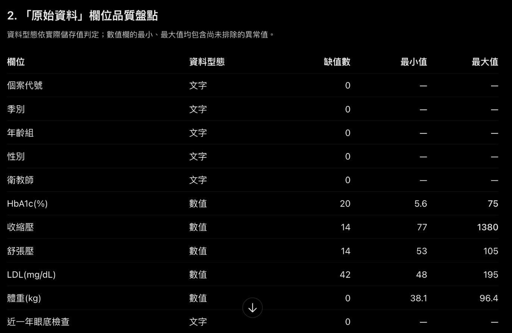
1 每欄的型態、缺值數、最小與最大值。HbA1c 最大 75、收縮壓最大 1380 一眼就看出有問題。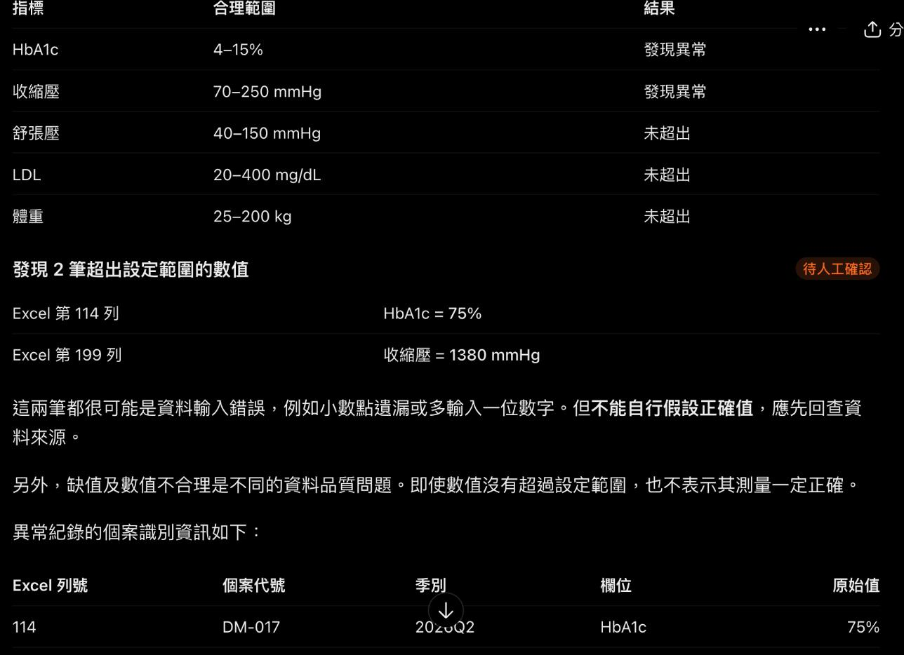
2 它用合理範圍表抓出 Excel 第 114 列 HbA1c 75%、第 199 列收縮壓 1380，標「待人工確認」，並寫明「不能自行假設正確值，應先回查資料來源」。這正是第 4 條要的行為。
1 它附上實際用的 Python。第一次用試算表元件讀取失敗，改用內建的 zipfile 讀 XLSX 的 XML。看到程式碼，才代表數字是算出來的，不是想出來的。
兩段提示詞
① 先描述，不要算 附件是去識別化的糖尿病個管資料（合成資料）。先不要做任何統計。
請用程式讀取後告訴我：1. 幾列幾欄；2. 每一欄的名稱、資料型態、缺值數、數值欄的最小與最大值；3. 你認為可能有問題的值（例如超出合理範圍）列出來，不要修改；4. 把前 5 列印給我看。
確認無誤我再給你要算的指標。
② 再算，附程式與分母 請用程式計算下列描述性統計，每一項都要：顯示程式碼、程式輸出的原始數字、分子與分母的定義、排除了哪些列與原因。
1. 全體與分性別的 HbA1c 平均、標準差、中位數；2. HbA1c < 7% 的達標率；3. 收縮壓 < 130 的比例；4. 各年齡層（<65、65–74、≥75）人數與達標率。
異常值先保留並標記，不要排除。不要下任何「有效」「顯著」的結論。最後給我一張欄位對照表。
和 Ⓐ 實測的連結、以及界線
第 2 節 Ⓐ 的實測裡，ChatGPT 沒有直接算，而是先反問 10 個分子、分母定義的問題，又抓出 HbA1c 75 與收縮壓 1380 兩個異常值。那就是第 1、3、4 條在運作。它反問是好事，不要嫌煩。
推論統計（t 檢定、迴歸、p 值）不在今天範圍：描述統計算錯你看得出來，推論統計算錯你看不出來。要做請回到 SPSS 或找統計諮詢。
資料一律先去識別化（第 1 堂的工作台），用合成資料練習；真實院內資料依院內規範與 IRB。
任何要進報告、評鑑、論文的數字：AI 算一次、你用 Excel 算一次、數字一致才用。
12 / 13
備
第 4 堂前準備：裝好研究文獻外掛（Consensus／PubMed） 第 2 堂教過的研究外掛，第 4 堂知識庫課要用來找指引與同儕審查文獻。三家確認結果（2026 年 11 月實測）：ChatGPT、Claude 可以裝，Gemini 沒有外掛、用替代路線。
ChatGPT（Plus） Claude（Pro） Gemini 能不能裝 可以。外掛程式目錄有 Consensus （搜 4 億篇論文：Semantic Scholar、OpenAlex、PubMed）、Life Sciences Literature、Arca PubMed。 可以。連接器目錄有 PubMed （Anthropic 官方）與 Consensus （官方連接器）。 不行 ：連接器目錄搜 Consensus、PubMed 都「找不到結果」，只有 Google 自家服務。怎麼裝 左下「外掛程式」→「瀏覽目錄」→ 搜 Consensus →「安裝」→ 用 Consensus 帳號登入（免費註冊）。 設定 → 自訂 → 連接器 → 探索 → 搜 PubMed 或 Consensus → 按「＋」連接。 替代：①「深入研究」模式（附來源）；② Gemini Notebook 把指引 PDF 丟進去問；③ consensus.app 網站查完貼回 Gemini。 怎麼用 直接問，或打「@Consensus」；第一次跳「要允許 ChatGPT 使用 Consensus 嗎？」→ 允許一次。約 3 分鐘回一張作者／年份／研究類型／結論表，附原文連結。 對話說「請用 PubMed 連接器找…」；每呼叫一個工具（搜尋、抓摘要、抓全文）都會問「允許一次／永遠允許」，示範可選永遠允許。回表格附 PMID 連結。 深入研究約 5～10 分鐘出報告，來源混網頁與論文，要自己核對是否同儕審查。
實測畫面 （問題：「低血糖 15 克糖、15 分鐘再測」的證據強度）：點圖放大。
1 ChatGPT 外掛程式目錄的 Consensus 頁。2 第一次會問「要允許 ChatGPT 使用 Consensus 嗎？」。3 結果表：ADA 指引 B 級建議、直接證據有限，附原文連結。4 Claude 連接器目錄：Consensus 按「＋」連接。5 Claude 每一步工具呼叫都問允許一次／永遠允許。6 Claude 回 PMID 表格：ADA 2026、內分泌學會 2023、兒少學會 2024。
兩家都提醒：「15 克、15 分鐘」是指引建議（ADA B 級），不是高確定性 RCT 證據，兒童要依體重算。知識庫要放指引原文，不是只放口訣。
簡報這兩頁 ▶
13 / 13
3
課後任務 勾選會自動記在這台電腦的瀏覽器裡，下次打開還在。
今天的地圖
兩小時：做出可以上架的網頁與素材，每個作品一個網址
10:00 破冰 ：遊戲簡報生成器玩 3 題；三個現成破冰網頁。10:10 上線 ：GitHub 五步驟、一個作品一個倉庫、三條上架路、ChatGPT 外掛直接 commit、上線前 10 項自檢。10:30 實作 1｜網頁型簡報 ：一個 index.html 就是一份簡報，請 AI 做一份衛教簡報，開新倉庫上線。11:00 實作 2｜目標九宮格 ：從大谷翔平的 81 格，做出病人可以填、可以印的網頁，開新倉庫上線。11:25 休息 10 分鐘 11:35 AI 做報名表 ：三條路線、GitHub 前端 ＋ Apps Script 後端實測（現場送一筆）。11:45 參考風格做素材 ：好風格六條規則、衛教單張（三家生圖＋疊字成品）、圖片、影片、動畫、音樂示範。11:55 送審自檢表、課後任務、下堂預告（11/23）
帶走的三個網址（三個獨立網站）
① 你的username.github.io ：自我介紹網頁（第 2 堂做的，今天補完）
② 你的username.github.io/slides/ ：一份衛教主題的網頁型簡報
③ 你的username.github.io/mandala/ ：病人可以填的目標九宮格
這一頁怎麼看 每個主題先看重點畫面 （步驟與提示語），緊接在下方的是實測截圖與下載檔。最後是第 4 堂預習（檔案 × AI、終端機代理）。
今天全程用合成資料 。所有公開網頁上不放病人資料、院內未公開文件、個人手機與住址。
破冰 5 分鐘
開場
破冰：左邊原本有，右邊少了哪一個？（長者遊戲簡報生成器）
怎麼玩 講師按「開始播放」，全場一起看左邊 5 秒。 看右邊，舉手說少了哪一個。 「公布答案」，連玩 3 題，第 3 題把數量調到 9。 這個遊戲本身就是一個上架好的網頁 ：有網址、手機能開、能下載 PPT。今天結束前，你也會有一個。
還有三個現成破冰，都是上架好的網頁 ：尋找對對碰 （40 張全開，找兩張一樣的、唸出左下角數字；有表情符號、台灣美食、動物圖庫，也能上傳自己的照片）｜圖片記憶對對碰 （翻牌記憶，牌背與翻開後都有編號，長輩直接說「3 號配 7 號」）｜營養圖卡工坊 （蛋白質配對卡牌產生器，可換成自己的食物與數字，列印 A4）。
動手 5 分鐘
開場
自己做一份：選玩法、調難度、上傳自己的圖、下載 PPT
① 出題設定 ：左欄選遊戲類型（規律接龍／找一樣／找缺少／找相同）、簡報風格、素材主題；右邊即時預覽 10 題。② 自訂圖片 ：圖案素材選「自訂圖片」，上傳至少 6 張長者熟悉的照片（食物、家人物品），選圓角或圓形外框。③ 開始播放 ：全螢幕投影，左「原本」右「現在」，按「公布答案」或鍵盤 → 揭曉。④ 公布答案 → 下載 PPT ：答案頁會把少掉的那個圈起來；下載的 PPT 每頁文字都能改，「離線網頁」沒網路也能在教室播。
現在做（手機或電腦都可以） 把遊戲類型改成找相同 ，主題選身體保健 ，數量調到 8，題目數 6，下載 PPT 看看封面標題能不能改。
衛教怎麼用： 上傳 6 張「藥盒、血糖機、試紙、酒精棉、針頭、紀錄本」照片做「找缺少」，用藥衛教開場 3 分鐘，病人會自己把名稱講出來。
開場｜練習用圖
沒有照片也能練：10 張去背、單純 的食物水果圖，直接下載丟進「自訂圖片」
蘋果 香蕉 葡萄 西瓜 橘子 草莓 番茄 紅蘿蔔 玉米 吐司
怎麼拿到圖 一鍵下載 10 張 ：food-10.zip （講義同一個按鈕），解壓縮後直接選取 10 張上傳。單張 ：電腦點圖放大 → 右鍵「另存圖片」。手機 ：點圖放大 → 長按圖片 → 儲存，或在講義按單張「⬇」。檔案是 618×618 透明背景 PNG，生成器裡選「圓形外框」最好看。
圖示來源：OpenMoji（CC BY-SA 4.0，可自由使用、需標示來源）。你自己拍的藥盒、血糖機照片也可以，用
這個重點畫面 的方法請 AI 去背。
開場｜破冰工具箱
三個現成的破冰網頁：團體怎麼帶、衛教怎麼接（都用剛才那 10 張圖就能玩）
尋找對對碰 （twopairsppic）：40 張全部翻開，找兩張一樣的、唸出左下角數字。帶法 ：全體一起找，誰先喊「5 和 13」誰得分；視覺搜尋＋唸數字，不需記憶，失智長者也能玩。衛教 ：上傳 20 張藥盒、食物、血糖機照片，找到後請長輩說出名稱與用途。圖片記憶對對碰 （memorygame）：翻牌記憶，4～18 張自己的圖。帶法 ：牌背有編號、翻開後左上角仍留編號，長輩只要說「翻 3 號」「3 號配 7 號」，帶領者操作；上方會顯示「✓ 3 號 配 7 號，成功」並記錄配對。衛教 ：6 張含糖飲料＋6 張代換食物，配對成功就講一句。營養圖卡工坊 （nutrition-card-play）：實體卡牌產生器，預設 54 張蛋白質配對卡，可換食物與數字、上傳圖片、列印 A4 每頁 4 張。帶法 ：翻到數值相同最快拍到就贏，2～6 人一桌。衛教 ：含糖飲料糖量配對、同一份醣類食物配對、藥名與時間配對。
三個都是單一 HTML 上架在 GitHub Pages 的網頁，就是今天要教的東西；圖片只存在你的瀏覽器，不會上傳。網址：mattsue1003.github.io/twopairsppic/、/memorygame/、/nutrition-card-play/（講義有按鈕）。
第一段｜GitHub 與個人網頁
為什麼要「上架」？因為檔案傳不出去，網址傳得出去
寄檔案的世界 PPT 要裝 Office 才開得了、手機排版會跑掉、改一版就要重寄一次、LINE 群裡找不到最新版。
一個網址的世界 手機、平板、電腦打開都一樣；改好重新上傳，網址不變 ；印成 QR code 貼在衛教室、放進衛教單張。
今天做的三樣東西 自我介紹網頁、網頁型簡報、目標九宮格。三個都是 HTML 檔 ，上架流程完全一樣，學一次用三次。
GitHub Pages 是什麼： GitHub 是全世界工程師放檔案的雲端倉庫，我們只用它一個免費功能：把 HTML 檔變成公開網址。免費帳號就能做，不需要信用卡，只要一個 Email。
第一段｜GitHub 與個人網頁
第 2 堂的五步驟，今天再走一次（10 分鐘）
登入 github.com，右上「＋」→「New repository」
Repository name 一字不差填 你的username.github.io ，Public，不勾 README
點藍色小字「uploading an existing file」，把 index.html 拖進去
保持「Commit directly to the main branch」→ 綠色「Commit changes」
等 1～2 分鐘，打開 https://你的username.github.io；沒出現就到 Settings → Pages 確認 Branch 是 main、/ (root)
取名出現綠色「is available」 Public、README 關閉 拖進去、Commit changes Settings → Pages 看到 live
第一段｜GitHub 與個人網頁
還沒有 index.html？用這段提示語 5 分鐘做一個
複製 請幫我做一個單一檔案的 HTML 自我介紹網頁，檔名 index.html，所有 CSS 寫在同一個檔案裡，不要用外部圖片。
我的資料：
- 稱呼：（例如 王衛教師）
- 單位：衛生福利部桃園醫院 糖尿病中心
- 職稱與證照：（例如 護理師、糖尿病衛教師）
- 擅長主題：（例如 胰島素注射、足部照護、低血糖處理）
- 一句話介紹：（例如 用長輩聽得懂的話，陪你把血糖顧好）
- 聯絡方式：只放公務信箱或「請洽糖尿病中心櫃台」
設計要求：手機好讀、字大行距寬；配色溫和（淺綠或米白）；用圖示代替照片；最下方放「本頁使用 AI 協助製作」。做好後告訴我怎麼存成 index.html。
三家在哪裡拿檔案
Claude ：右側直接顯示網頁，上方「下載」。
Gemini ：開「任務」或 Canvas 才能預覽；從程式碼複製貼到記事本存成 index.html。
ChatGPT ：程式碼框右上「複製」，或請它「直接給我下載檔案」。
沒時間做？下載練習包 mattsue1003.github.io/q12345/l3-starter.zip ：解壓縮成一個資料夾，裡面是虛構「王衛教師」的 index.html，直接拖上 username.github.io 倉庫練上架；之後再把整份貼給 AI 改成你的資料。
存檔陷阱： Windows 先打開「顯示副檔名」，不然會存成 index.html.txt。存好後雙擊能在瀏覽器打開就對了。
第一段｜GitHub 與個人網頁
一個作品一個倉庫：每個網頁都是自己的 index.html ，有自己的網址，不用塞進自我介紹頁
三個倉庫，三個網址
你的username.github.io → index.html → https://你的username.github.io（自我介紹）
slides → index.html → https://你的username.github.io/slides/ （網頁型簡報）
mandala → index.html → https://你的username.github.io/mandala/ （目標九宮格）
倉庫名只用英文小寫、數字、減號，網址就是倉庫名。每個倉庫裡的主檔一律叫 index.html，網址才不用帶檔名。
公開界線： 不放個人手機、住址、病人照片與任何病人資料；以醫院名義發布前先確認院內規定。
新作品上架四步（和第一個倉庫只差第 3 步）
github.com 右上「＋」→ New repository，名稱填 slides （或 mandala），Public，不勾 README。
「uploading an existing file」把 index.html 拖進去 → Commit changes。
Settings → Pages → Branch 選 main 、資料夾 / (root) → Save。這一步不能省 ：只有 username.github.io 那個倉庫會自動開 Pages，其他倉庫要手動開。
等 1～2 分鐘，打開 https://你的username.github.io/slides/。要更新就重新上傳 index.html 覆蓋，網址不變。
想在自我介紹頁放作品連結也可以（選用）：請 AI 加「我的衛教作品」區塊，連結寫完整網址 https://你的username.github.io/slides/。病人掃 QR 直接到作品，不必經過首頁。
第一段｜GitHub 與個人網頁
上架有三條路：Gemini → Google 協作平台、GitHub Pages、Netlify，差在哪？
Gemini 匯出 → Google 協作平台 GitHub Pages（今天主線） Netlify（拖資料夾就上線） 怎麼上架 Canvas 右上「匯出」→「Google 協作平台」→ 開啟 → 右上「發布」取個網址名稱。約 1 分鐘 （下一頁有畫面）。 註冊 → 建倉庫 → 拖檔案 → 等 1～2 分鐘。第一次約 20 分鐘，之後每次 2 分鐘。 登入 netlify.com → Drop 頁面把整個資料夾拖進去 → 立刻有網址。 網址 sites.google.com/view/自訂名稱 ，可印 QR；不能用自己的網域（要 Workspace）。 你的username.github.io/倉庫名/ ，好記、可印 QR。亂碼.netlify.app，可以改成 自訂名.netlify.app。 能放幾個檔案 一次匯出一個 Canvas；之後可在協作平台裡再加頁面、導覽列、嵌 Google 文件與表單。 一個作品一個倉庫，各自網址；要幾個就開幾個。 很多個，整個資料夾一起上。 更新 在協作平台編輯器裡改、再按「發布」。從 Gemini 再匯出一次會多建一個新網站 ，不會更新舊網址。 重新上傳覆蓋同名檔案，網址不變。 再拖一次資料夾。 會不會消失 網站存在你的雲端硬碟，不刪就在；院內 Workspace 管理者可能關閉「對外發布」。 不刪倉庫就一直在。 免費方案有流量額度，個人衛教使用通常夠。 適合 不想學 GitHub、院內同仁限定查看（可設只限機構帳號）、馬上要給人看。 要長期用、要印 QR、要放很多作品。 不想學 GitHub、檔案很多張圖片時。
建議： 先匯出到協作平台給同事試玩、或做院內限定頁；要印 QR、放很多作品、長期維護，用 GitHub Pages。三條路都從同一份 HTML 出發（Canvas「匯出」→「下載程式碼」就是那個檔），隨時可以換。還有第四條：ChatGPT 裝 GitHub 外掛程式，一句話直接 commit（
這個重點畫面 ）。
第一段｜GitHub 與個人網頁
實測：Gemini Canvas 匯出到 Google 協作平台，五個畫面、一分鐘上線（2026/11）
① Canvas 右上「匯出」：Google 協作平台／下載程式碼 ② 幾秒後跳出「已建立新版 Google 協作平台網站」→ 開啟 ③ 編輯器：整頁被嵌成一個區塊，還不是公開的，要按右上「發布」 ④ 取網址名稱 → sites.google.com/view/名稱；「誰可以查看」預設所有人 ⑤ 約 1 分鐘後公開網址打得開；手機直式也正常，頂端多一條標題列
優點 不用學 GitHub、不用新帳號，約 1 分鐘上線。
缺點（白話版） 像被放進相框 ：協作平台不是直接顯示你的網頁，而是在它自己的頁面裡開一個「窗」嵌入你的網頁，所以最上面會多一條協作平台的標題列；網頁很長時，要在那個窗裡面再捲一次。再匯出是「另一個網站」 ：你在 Gemini 改好內容再按一次匯出，會多出一個全新的網站、新的網址，舊網址還是舊內容。要更新就得進協作平台改，或重新匯出後重新發 QR。網址不是你的 ：一律 sites.google.com/view/…，而且院內 Workspace 管理者有權限整個關掉對外發布。
怎麼選（白話版） 今天先做出來給人看、或只給院內同事看 → 匯出到協作平台最快，一分鐘有網址，還能設定只限機構帳號查看。要印成 QR 貼衛教室、要常常改、要放很多作品且各自有固定網址 → 用「匯出 → 下載程式碼」拿到 HTML 檔，走 GitHub 五步驟。網址固定，改好重傳同名檔案就更新。
第一段｜上架的第四條路：ChatGPT 外掛程式 → 直接寫進 GitHub
不用打開 GitHub 網站：在 ChatGPT 對話裡裝好 GitHub 外掛程式 ，一句話把檔案 commit 上去（實測 2026/11）
裝外掛 ：ChatGPT 左下「外掛程式」（設定 → 外掛程式）→「瀏覽目錄」找 GitHub （OpenAI 提供，功能寫著 Interactive、Write）→ 安裝 → 用第 2 堂註冊的 GitHub 帳號登入授權。權限先看懂 ：預設是「允許唯讀工具」。要它寫檔案時，對話裡會跳出「要允許 ChatGPT 使用 GitHub 嗎？將調用 Create File 工具」：選允許一次 最安全，不要按「一律允許」。交辦 ：貼右邊的提示語，指定新倉庫名（例如 slides ）、檔名 index.html、分支 main、commit 訊息，貼上完整 HTML。它會自己建倉庫、建檔、提交，回你檔案網址與 commit ID。驗收 ：到 Settings → Pages 開 main / root，等 1～2 分鐘打開 你的username.github.io/slides/。ChatGPT 自己也會提醒「檔案提交成功，不代表 Pages 已啟用」：第一次還是要到 Settings → Pages 開。
注意 ：它能寫就能覆蓋。檔名打錯會蓋掉既有檔案（例如 index.html），所以提示語裡檔名寫清楚、說「新增」不要說「更新」 ；重要檔案先在 GitHub 下載備份。ChatGPT Plus 以上才有外掛程式；免費帳號走五步驟拖檔。
複製 請用 GitHub 外掛程式，幫我建立一個新的公開倉庫 slides（如果已存在請先停下來問我），在 main 分支新增檔案 index.html，內容是我下面貼的完整 HTML，一字不改。commit 訊息寫「add slides」。完成後告訴我檔案網址，並提醒我到 Settings → Pages 開啟。
（接著貼上 AI 幫你做好的簡報 index.html 全部內容）
① 設定 → 外掛程式：GitHub 已安裝，預設「允許唯讀工具」 ② 寫檔前一定問你：Create File 工具 → 允許一次 ③ 回報 commit ID、檔案網址與 Pages 網址，1 分鐘後打得開
實測成品：mattsue1003.github.io/q12345/chatgpt-upload-demo.html（處理 1 分 8 秒，全程沒開 GitHub 網站）。
第一段｜上架之後
網址打得開 ≠ 可以正式用：上線前讓 AI 幫你檢查 10 件事
手機排版 ：手機打開不會左右捲動，字至少 16px，按鈕一指按得到。圖片瘦身 ：每張 300 KB 以下、寬不超過 1600px，長輩的手機才載得快。連結全通 ：首頁與作品之間的連結寫完整網址，點一遍沒有 404。HTTPS ：GitHub Pages 的 Settings → Pages 勾「Enforce HTTPS」。程式裡沒有祕密 ：沒有金鑰、密碼、個人手機、病人資料。標題與描述 ：有 title、meta description、og:title，LINE 轉傳才有預覽卡。速度 ：pagespeed.web.dev 貼網址，行動裝置四項 90 分以上。表單真的送得到 ：自己填一次，試算表有資料、通知有收到。標示 ：「AI 協助製作」「請以醫療人員說明為準」、最後更新日期。無障礙 ：字與底色對比夠、每張圖有替代文字、不用只靠顏色表達。
第 7 項實測 ：pagespeed.web.dev 貼上講義網址 → 行動裝置：效能 100、無障礙 96、最佳做法 100、SEO 100。不到 90 的項目，把它列出的建議整段貼給 AI 改。複製 （貼上你的 index.html 全部內容）
請用下面 10 項逐一檢查這個網頁，每項回答「通過／不通過／怎麼改」：手機排版、圖片大小、連結是否都有效、HTTPS、程式裡有沒有金鑰或個資、title 與 meta description 與 og 標籤、載入速度、表單送出測試、AI 協助製作與醫療免責標示、無障礙（對比、替代文字）。
檢查完直接給我修正後的完整 index.html。
課堂做法： 上傳成功後不要急著發 QR，先把這段提示語丟給 AI 跑一遍、再跑一次 PageSpeed，兩個都綠了才算「上線」。改好重新上傳，網址不變。
第二段｜網頁型簡報
網頁型簡報：一個 HTML 檔，就是一份能翻頁、能投影、手機能開的簡報
你現在看的這份，就是。
不用安裝 PowerPoint，瀏覽器打開就能投影。
可以放互動 ：翻牌問答、計時器、點一下跳到網站。
手機、平板打開就是直式可讀版本。
改字只要再請 AI 改一句，重新上傳，網址不變 。
按 F 試試全螢幕、按 O 看總覽。
PowerPoint Canva 網頁型簡報 打開方式 要有 Office 要登入 Canva 任何瀏覽器 分享 寄檔案 分享連結 一個網址 + QR（GitHub 或協作平台） 互動（問答、計時） 有限 有限 想得到就做得到 美編微調 最方便 方便 要用「說」的改 適合 院內正式簡報 海報、圖卡 團體衛教、病友教室、手機閱讀
第二段｜網頁型簡報
提示語範本：一份 8 頁的「低血糖處理」團體衛教簡報
複製 請幫我做一個單一檔案的 HTML 網頁型簡報，檔名 index.html（會放在自己的 GitHub 倉庫 slides），CSS 和 JavaScript 都寫在同一個檔案裡，不要用外部圖片。
主題：低血糖的辨識與處理（給糖尿病病人與家屬的團體衛教，約 15 分鐘）
對象：60～80 歲長者與陪同家屬，部分視力不佳
共 8 頁：1 封面 2 什麼是低血糖（數字 70） 3 常見症狀（6 個，用大圖示） 4 立刻做的三件事（15 克糖的例子） 5 15 分鐘後再測一次 6 什麼情況要送醫 7 怎麼預防（吃藥、進食、運動時間） 8 翻牌問答 3 題
設計要求：
1. 16:9 版面，字體至少 28px，標題 48px 以上，高對比，一頁一個重點
2. 鍵盤左右鍵、點擊螢幕左右半邊都能翻頁，手機可左右滑動
3. 第 8 頁的問答卡點一下翻面顯示答案
4. 右下角顯示頁碼，有「全螢幕」按鈕
5. 最後一頁放「本簡報使用 AI 協助製作，內容請以醫療人員說明為準」
請先列出 8 頁的標題與重點給我確認，再寫程式。
這段提示語的四個關鍵
單一檔案 ：才能直接拖上 GitHub。
頁數與每頁內容先列出來 ：AI 先給大綱再寫程式，錯了改大綱比改程式便宜。
長者規格寫成數字 ：28px、48px、高對比，不要只寫「字大一點」。
互動寫清楚動作 ：點一下翻面、左右滑動，AI 才知道要做什麼。
內容先用 AI 起草，數字與處置一定要用院內衛教單或指引核對 ，再上線。
第二段｜網頁型簡報
在哪裡做、怎麼預覽、怎麼改
Claude 貼提示語，右側 Artifacts 直接顯示可以翻頁的簡報。滿意就按「下載」，存成 index.html。
最適合第一次做：所見即所得。
Gemini 先開「任務」再貼提示語，右側會出現 Canvas 預覽。做好後「分享」可以直接拿到連結，或複製程式碼存檔。
「對話」模式只會給程式碼，不會預覽。
ChatGPT 貼提示語後會給程式碼框，點「複製」貼到記事本存成 index.html，雙擊預覽。也可以開畫布（Canvas）預覽。
修改用「說」的，一次一件事
第 3 頁的六個症狀改成兩排三個，圖示放大 所有頁面的字再放大 20% 第 4 頁加上「方糖 3 顆＝15 克」 翻頁加一個淡入效果 手機直式時一頁一個重點往下排
做壞了怎麼辦 把錯誤訊息或「現在變成怎樣」直接貼給它；連改三次還不對，就說「回到上一版」，或換另一家工具貼同一段提示語。
課堂實作 15 分鐘
第二段｜網頁型簡報
現在做：一份簡報 → index.html → 新倉庫 slides → 手機打開
把這個重點畫面 的提示語貼到 Claude 或 Gemini「任務」，主題可以換成你負責的衛教主題（胰島素注射、足部照護、飲食份量…）。
先看大綱，調整 1～2 處再讓它寫程式。
預覽：鍵盤能翻頁、字夠大、問答卡會翻面。
存成 index.html ；到 GitHub 建新倉庫 slides ，把它拖進去 Commit。
Settings → Pages → Branch main、/ (root) → Save（這個重點畫面 第 3 步，新倉庫一定要做）。
等 1～2 分鐘，手機打開 https://你的username.github.io/slides/ ，傳給旁邊同學看。
做完的同學：請 AI「幫我做一張 QR code 指向這個網址，A4 直式，上面寫『低血糖怎麼辦 掃我看』」，順便練一下圖片。
第二段｜步驟影片 → 網頁型簡報
手工藝、操作技巧的「步驟影片」，變成一頁一步驟的教學簡報
示範：mattsue1003.github.io/craft-lesson-plan-steps 。左邊是影片，點步驟就跳到那一段；右邊是該步驟的重點與帶領備忘，鍵盤 ← → 翻步驟。
為什麼要這樣做 整支影片 5 分鐘，病人跟不上；一次只看一個步驟 ，看完做完再下一步。 每步旁邊寫重點與分級提示，帶領者不用背。 同一份程式換影片、換步驟文字，就是下一個手作教案。 影片來源： 自己拍的最好；用 YouTube 公開影片請用官方嵌入播放器 （不下載、不重新上傳），並保留「開啟 YouTube」按鈕；不確定授權就不要放上公開網頁。
第二段｜步驟影片 → 網頁型簡報
三步驟：盤點時間點 → 請 AI 做簡報 → 上傳成網址
盤點時間點 ：看一次影片，記下每個步驟開始的分秒與一句話名稱（5～8 步）。沒時間就把影片連結或逐字稿貼給 AI，請它先列出步驟草稿，你再核對。請 AI 做簡報 ：用右邊的提示語，把步驟表貼進去。上傳 ：存成 index.html，開一個倉庫 craft 放上去、開 Pages，課堂用投影機或平板打開 …/craft/。
適用：編織、摺紙、黏土、烹飪、胰島素注射步驟、血糖機操作、傷口換藥（院內自拍影片）。
複製 請做一個單一檔案的 HTML「步驟教學簡報」，檔名 index.html（會放在 GitHub 倉庫 craft），CSS 與 JavaScript 寫在同一檔案。
影片：YouTube 網址（貼上），請用 youtube-nocookie 的嵌入播放器，不要下載影片。
步驟（名稱｜開始時間｜重點 2～4 條｜帶領提示）：
1. 工具與材料盤點｜0:20｜…｜…
2. 十字固定與中心打底｜0:42｜…｜…
（依序貼上全部步驟）
畫面：左邊是影片，下方列出全部步驟按鈕（顯示時間），點一個就跳到那個時間點播放；右邊顯示目前步驟的標題、重點清單、帶領提示（用淡綠色框）。
操作：鍵盤 ← → 切換步驟，切換時影片自動跳到該時間點；右上角有「全螢幕投影」與「開啟 YouTube 備用」按鈕；下方顯示「步驟 N / 總數」。
字體至少 20px、高對比，手機直式時影片在上、步驟在下。最後在頁尾標示「本頁使用 AI 協助製作」。
請先列出你理解的步驟表讓我確認，再寫程式。
第三段｜目標九宮格程式
大谷翔平高一那年寫的 81 格
花卷東高中一年級，在教練帶領下用原田隆史的「目標達成表」（曼陀羅計畫表） 寫下 9×9＝81 格。
正中央：8 球團第一指名 。
周圍 8 格是達成它的面向：體格、控球、球質、球速 160 km/h、變化球、運氣、人品、心志。
外圈 64 格是每天做得到的小事。「運氣」那一格底下寫的是：打招呼、撿垃圾、打掃房間、對裁判的態度、珍惜球具、讀書……
重點不是 81 格填滿，而是把大目標拆成今天就能做的一件事 。
體格
控球
球質
心志
8 球團
球速
人品
運氣
變化球
打招呼
撿垃圾
打掃房間
讀書
運氣
對裁判
珍惜球具
正向思考
被支持
中間 9 格（上）與「運氣」那一塊的 9 格（下），依公開報導整理
第三段｜目標九宮格程式
搬到糖尿病衛教：病人的 81 格長這樣
飲食
運動
用藥
家人支持
3 個月後
血糖監測
回診與檢查
情緒與睡眠
足部照護
怎麼和病人一起填
① 中間 9 格由衛教師帶著填：目標要有數字、有期限 。
② 外圈不必填滿 ：先挑病人最有把握的 2～3 個面向，每格一件「這週就做得到」的事：飯後散步 15 分鐘、藥放牙刷旁、每天看腳底。
③ 列印貼冰箱，完成一件打一個勾；回診帶來，勾勾變多就是進步。
用 AI 的位置：請它依病人條件 （年齡、工作、用藥、活動量）產生 64 個候選小行動，再由衛教師和病人挑。AI 出選項，人做決定。
第三段｜目標九宮格程式
程式製作提示語：一個可以填、會記住、能列印的九宮格網頁
複製 請做一個單一檔案的 HTML 網頁「目標九宮格」，檔名 index.html（會放在自己的 GitHub 倉庫 mandala），CSS 與 JavaScript 寫在同一檔案，不用外部套件。
功能：
1. 畫面是 9×9 的 81 格（3×3 個大區塊，每區塊 3×3 小格）。正中央那格是「大目標」，它周圍 8 格是「面向」，每個面向會自動同步顯示在對應外圍區塊的中心格；其餘 64 格是「小行動」
2. 每格都可以直接打字，輸入後自動存在瀏覽器（localStorage），重新整理不會不見
3. 小行動格右上角有一個打勾按鈕，勾了變淡綠色，頁首顯示「已完成 N / 64」
4. 有一個下拉選單可以套用範本：「糖尿病自我管理」（目標：3 個月後 HbA1c 7% 以下且無低血糖；八個面向：飲食、運動、用藥、血糖監測、足部照護、情緒與睡眠、回診與檢查、家人支持；請幫每個面向寫 8 個長者做得到的小行動）
5. 「列印 A4」按鈕：橫式 A4 一頁印完，隱藏按鈕
6. 「下載圖片」按鈕：把九宮格畫成 PNG 下載
7. 手機也能用：格子字體自動縮小，不會左右捲動
8. 配色：中央橘色、面向淡藍綠、其他白色；字體用系統中文字體
頁尾寫「本頁使用 AI 協助製作」。請先確認功能清單，再寫程式。
示範成品（講師做好的）
mattsue1003.github.io/q12345/mandala.html ：手機掃開來玩，套用「糖尿病自我管理」範本、打勾、列印、下載圖片。你等一下做的會和它很像。
提示語的訣竅 功能一條一條編號 、把「自動存檔」「列印」「手機」這些你在意的事寫出來。AI 不會猜你要列印。
課堂實作 15 分鐘
第三段｜目標九宮格程式
現在做：九宮格 → index.html → 新倉庫 mandala → 和同學互填
貼上一頁的提示語到 Claude（預覽最快）或 Gemini「任務」。
它列出功能清單後，加一句你的需求，例如「範本再加一個『體重管理』」。
預覽：打字會留著、勾勾會變色、列印預覽一頁印完。
存成 index.html ，建新倉庫 mandala 拖進去，Settings → Pages 開 main / root。
把網址傳給旁邊同學，請對方用「糖尿病自我管理」範本幫一位合成個案填 3 個面向。
網址是 https://你的username.github.io/mandala/ ；想放進自我介紹頁的作品區再請 AI 加連結（選用）。
常見修改指令
面向那 8 格字再大一點 加一個「全部清空」要先確認 加「複製成文字」按鈕方便貼 LINE 列印時中央格要保留橘色 加填寫人與日期欄位
填寫人欄位只寫稱呼與日期，不要寫病歷號或完整姓名 。資料只存在填寫者自己的瀏覽器，不會上傳到任何地方。
第四段｜AI 做報名表與上傳
步驟 1：把欄位、存哪裡、畫面要求、要哪兩個檔案講清楚
複製 請幫我用 Google Apps Script 做一個「糖尿病衛教課程報名表」網頁。
欄位：姓名（必填）、聯絡電話（必填，10 碼數字）、Email、報名場次：11/20（五）上午、11/27（五）上午（必填）、陪同家屬人數（0～3）、上傳檢驗報告或轉介單照片：照片或 PDF，一個檔案，最大 5 MB（選填）、我已閱讀並同意個資蒐集告知（勾選，必填）。
需求：
1. 送出後，資料寫進這份 Google 試算表的「報名資料」工作表；第一欄是送出時間，最後一欄是檔案連結。
2. 上傳的檔案存到我的雲端硬碟資料夾「衛教報名_上傳檔案」（沒有就自動建立），檔名前面加上姓名和日期。
3. 手機好填、字要大；送出時按鈕顯示「上傳中…」，成功後顯示「報名成功」。
4. 請給我 Code.gs 和 index.html 兩個檔案的完整程式碼，並一步一步告訴我怎麼部署成「網頁應用程式」。
寫好提示詞的四件事 欄位與哪些必填 資料寫到哪個工作表 檔案存哪個資料夾、怎麼命名 畫面大字好按；最後一定寫「給我完整程式碼，並一步一步教我部署」
Gemini：模型選 Pro，約 30 秒給兩個檔案 ChatGPT：想較久、程式較長、多防呆
第四段｜AI 做報名表與上傳
報名表收的是個資：上線前檢查，以及不想寫程式的替代方案
個資與上線前檢查
表單上寫清楚個資告知 ：主辦單位、目的、資料類別、保存期間、當事人權利（個資法第 8 條）。
病歷、檢驗報告屬特種個資 （第 6 條）：報名表盡量不要收；真的要收，先確認院內規定。
上傳資料夾不要設「知道連結的任何人」；給同事看用 Email 個別共用。
自己先送一筆假資料；測 5 MB 以上與錯誤格式會不會被擋。
活動結束到「管理部署作業」封存，依告知期間刪除檔案。
工具 免費收檔 填答者登入 適合 Google 表單＋Gemini 可以 要 院內同仁報名 Tally 可以（單檔 10 MB） 不用 零預算、對外開放 Jotform 可以（額度小） 不用 要繁中介面的小型報名 SurveyCake 付費方案 不用 需要台灣客服與發票 AI＋Apps Script 可以 不用 免費、資料留在自己帳號
2026 年 11 月查證，額度常變動，用前再看官網。
一句話選擇： 填答者都有 Google 帳號用 Google 表單；對外開放又不想寫程式用 Tally；想免費、免登入、資料留在自己帳號，用 AI＋Apps Script。
第五段｜參考他人風格做圖片、影片、音樂
原則：風格可以學，作品不能抄（圖片、影片、簡報都一樣）
可以做 參考別人的排版、配色、構圖、節奏、曲風 ，換成自己的衛教內容。 上傳自己拍的、院內授權的、或 AI 生成的圖當參考。 描述「扁平插畫、粉彩、粗線條」這類風格詞。 不要做 上傳別人的作品叫 AI「畫一張一樣的」再對外發布。 用真人的臉 （名人、同事、病人）生圖生影片。 在提示語寫特定歌手、畫家、品牌的名字當成品風格。 三步驟 找 2～3 張你喜歡的參考（海報、圖卡、短片截圖） 用話描述你看到的風格：線條、配色、留白、字體感 換成自己的主題、對象與訊息，再做
院內素材審查三問： 有沒有真人肖像？有沒有別人的作品或商標？數字與處置有沒有用院內衛教單核對？三題都過，再送審、再發布。
第五段｜圖片
圖片：上傳參考圖，說「用這個風格，畫我的內容」
ChatGPT（建議主力） 免費帳號可上傳參考圖再生圖，新版還能儲存常用參考圖 。一組圖卡要風格一致、只改一處，它最穩。
Gemini（免費備援） 一次可放多張參考圖 ，提示語裡說明每張的角色（風格／構圖）。額度不公開且會變。
Canva 成品用魔法圖層拆開改字、改色，排成 A4 海報或 1:1 圖卡。
複製 （先上傳 2 張你喜歡的衛教圖卡當參考）
請參考這兩張圖的「風格」：扁平插畫、粗黑描邊、米白底、每張只有一個主角、配色不超過 4 色，但不要複製它們的內容。
用這個風格幫我畫 6 張一組的衛教圖卡，主題「低血糖的六個常見症狀」：冒冷汗、手抖、心跳快、頭暈、肚子餓、說話不清楚。
每張：1:1，正中央一位 70 歲左右的台灣長者（卡通化、不是真人），下方留 20% 空白給我放字。
先畫第 1 張給我確認風格，確認後再畫其他 5 張，並保持同一個人物、同一組配色。
第五段｜簡報風格
簡報風格：截 2～3 張你喜歡的簡報，讓 AI 學「版型」，內容換成你的
參考什麼 版型 ：標題位置、左文右圖還是上下、留白多少配色 ：底色、強調色、字色各一個字 ：標題多大、內文多大、粗細節奏 ：一頁一句還是一頁三點、有沒有章節分隔頁不參考什麼 別人的照片、插圖、商標、逐字內容。這份簡報也可以當參考：按 O 總覽截圖，請 AI 學它的版型做你的主題。
複製 （先上傳 2～3 張你喜歡的簡報截圖）
請先用文字描述這幾張簡報的「風格」：版型（標題位置、圖文比例、留白）、配色（底色、強調色、字色，給我色碼）、字體大小與粗細、每頁資訊量與節奏。不要描述它們的內容。
然後用這個風格，幫我做一份單一檔案的 HTML 網頁型簡報 index.html，主題「胰島素注射部位輪替」給 60 歲以上病人與家屬，共 8 頁，內容用我提供的衛教單張（稍後貼上）。
規則：不使用參考圖裡的任何圖片、商標與文字；內文字至少 28px；鍵盤左右翻頁、手機可滑動；最後一頁標示「本簡報使用 AI 協助製作，內容請以醫療人員說明為準」。
先給我風格描述與 8 頁大綱，我確認後再寫程式。
同一段風格描述存起來，之後每一份簡報、圖卡都用它，科內素材就會長得像一家人。
第五段｜簡報風格：拆解一個有設計感的網站
好風格從哪來：拆一個你喜歡的網站，六條規則 換成衛教內容
配色只有三個角色 ：底色、文字、一個主強調色（薄荷綠 #00F0B0 用在小標、編號、進度條）；再加一個暖色點綴（沙色 #D8C7A4）。給色碼，不給形容詞 。大標題一句話 ，其中 3～5 個字換成暖色：眼睛先看到重點（看這頁標題的「六條規則」）。小標用等寬字體＋「// 」 ，像程式註解：一眼知道這是章節標籤，不和內文搶。卡片 ：深底、1px 細邊、10px 圓角、左上小編號：資訊有格子可放，版面自然整齊。留白 ：一頁一個重點、三張卡片為上限；字大、行距寬，不塞滿。背景一層極淡格線或一抹漸層光暈 ：有層次，但不搶內容。深色投影好看；印講義或長者手機閱讀，請 AI 加「切換黑／白底」。
複製 請幫我做一個單一檔案的 HTML 網頁型簡報 index.html，主題「糖尿病足部照護」，給 60 歲以上病人與家屬，共 8 頁。
風格規則（請嚴格遵守）：
1. 深色底 #141413、極淡格線背景；文字米白 #EDEDE6；主強調色薄荷綠 #00F0B0 只用在小標、編號、進度條；暖色沙色 #D8C7A4 只用在每頁標題裡要強調的 3～5 個字。
2. 每頁一個大標題（48px 以上、粗體、左對齊），標題上方一行等寬字體的章節標籤，像「// 01 為什麼要每天看腳」。
3. 內容放在深灰卡片 #1C1C1A 裡：1px 邊框 #2F2F2C、圓角 10px，卡片左上角等寬字小編號 01、02。
4. 一頁最多三張卡片、三個重點，留白要多。
5. 內文字至少 28px、高對比；按鈕膠囊形（圓角 999px）。
6. 右上角「切換黑／白底」按鈕；鍵盤左右翻頁、手機可滑動、右下角頁碼、全螢幕鍵。
7. 最後一頁標示「本簡報使用 AI 協助製作，內容請以醫療人員說明為準」。
不使用任何真人照片、商標或他人的文字。請先給我 8 頁大綱與每頁要強調的字，我確認後再寫程式。
學風格不抄作品 ：參考的是上面這種「規則」，不是對方的文字、圖片、商標。把規則寫成提示語存起來，之後每一份衛教簡報、圖卡都套同一套，科內素材就會長得像一家人。
第五段｜衛教單張：拿一張你喜歡的海報，拆風格、換內容
衛教單張也能有設計感：參考海報的風格 ，內容換成你的衛教三步驟
① 先拆風格（講師從一張台灣旅遊海報拆出來的六點） 粉藍色平塗底色｜扁平插畫、無描邊、飽和的橘綠藍色塊｜一條 S 形道路從左上到右下串起場景｜人物比例誇張、卡通化｜雲朵與小熱氣球點綴留白｜左上大塊留白放標題、右側一小塊放內文。只描述風格，不描述內容 ：地標、人物、文字都不要帶過來。
② 生圖 ：風格描述＋你的衛教內容（三個場景沿路排好），要求「圖中不要文字、品牌、真人」，並指定留白位置。③ 疊字 ：到 Canva 開 A4，放底圖，標題 48pt 以上、內文 14pt 以上、院徽、「請以醫療人員說明為準」與日期。④ 送審三問 ：有沒有真人肖像？有沒有別人的作品或商標？數字與處置有沒有用院內衛教單核對？
複製 請生成一張 A4 直式的衛教單張插畫，主題「低血糖怎麼辦？救急三步驟」，給 65 歲以上糖尿病病人與家屬。
風格（參考旅遊海報的「風格」，不要任何地標或旅遊元素）：粉藍色平塗底色；扁平插畫、無描邊、飽和的橘、綠、藍色塊；一條彎曲的 S 形道路從左上到右下串起三個場景；人物比例誇張、卡通化的台灣長者（不是真人）；雲朵與小熱氣球點綴留白；左上角留一大塊空白給標題，右側中段留一小塊空白給內文。
三個場景沿著道路依序：① 長者吃糖果或喝果汁（旁邊有三顆方糖）② 坐著看血糖機，旁邊一個時鐘 ③ 家屬陪伴、遠處有一輛救護車。
圖中不要出現任何文字、品牌或商標，文字我會自己加。
Gemini ChatGPT Canva AI
同一段提示語三家各生一張（2026/11），下一頁放大比較。參考用的原海報是圖庫素材，不放進公開簡報 ；上課請帶自己喜歡的海報來拆。
第五段｜衛教單張：同一段提示語，三家的結果
同一段提示語三家各生一張底圖，疊上三層文字就是完整衛教單張 ：大標題、三步驟卡、說明與免責
Gemini ：最照提示語做。S 形路、三個場景、右側真的留了一塊文字區；色彩偏淡雅。免費帳號可用；第一次它只回了「提示詞」，再說一句「直接生成圖片」才出圖。ChatGPT ：色彩最飽和、表情最生動，很像海報。但沒留白 （標題區被畫滿），要在 Canva 另外加色塊壓字。第一次出錯「Something went wrong」，重送一次就好。Canva AI （canva.com/ai）：柔和、乾淨，上方留白最多。最大優點是生完直接在 Canva 裡 ，按「編輯設計」就能疊字、加院徽、匯出 A4 PDF，不用下載再上傳。免費方案有生圖額度。
三層文字 ：① 大標題＋一句什麼時候要處理 ② 三張步驟卡：編號、動作、怎麼做 ③ 隨身提醒＋免責與日期。底圖左欄、文字卡右欄，長者一眼知道先看哪裡。課堂建議 ：先用 Canva AI 生，不滿意再拿同一段提示語去 Gemini 或 ChatGPT；最後都回到 Canva 排版。三張都做到「卡通長者、不是真人、沒有文字與商標」，送審三問才過得了。
第五段｜影片
影片：AI 生影片目前多半要付費，免費路線是「圖卡 + 字幕 + 配音」
工具 現況（2026/11，會變動） Gemini（Veo） 影片生成在付費方案（AI Pro 約每天 3 支）；免費方案偶有限時開放。 ChatGPT／Sora Sora 已於 2026/4/26 停用，ChatGPT 不能生影片 ；可做腳本、圖卡、GIF、網頁動畫（這個重點畫面 ）。 Google Vids／Canva／Edits 免費就能把圖卡排成影片 、自動字幕、加配音與配樂。衛教短片首選，後面三頁有細節步驟。
「參考影片風格」怎麼學：找一支你喜歡的衛教短片，截 3 張圖貼給 AI，請它描述結構 （開頭問題、三重點、結尾行動）、畫面風格 （插畫還是實拍、配色、字幕大小位置）、節奏 （幾秒換一張），再套到你的主題。不要用它的畫面與旁白。
複製 請幫我寫一支 30 秒衛教短影音的微劇本，主題「低血糖時先做三件事」，對象是 65 歲以上糖尿病病人與家屬。
（我先貼了 3 張參考短片的截圖）請先描述這支影片的結構、畫面風格與字幕樣式，然後用同樣的結構與風格寫我的腳本。結構：
- 0–3 秒：一句抓住注意力的問題（口語、台灣用語）
- 4–24 秒：三個重點，每個重點一張圖卡 + 一句旁白不超過 15 字
- 25–30 秒：一句行動呼籲 + 「請以醫療人員說明為準」
請用表格輸出：秒數｜畫面（給生圖用的描述，卡通長者、不要真人）｜旁白｜字幕。
旁白請用溫和、慢速的語氣，之後我會用 Canva 的 AI 配音唸出來。
第五段｜影片：示範成品
衛教短片示範：三張 AI 底圖 ＋ 大字幕 ＋ 台灣口音旁白 ＋ 配樂 ，免費工具就做得出來
你的瀏覽器不支援影片播放，點此下載 。 「低血糖怎麼辦？救急三步驟」70 秒有聲版，1920×1080：台灣口音 AI 旁白（微軟語音「曉臻」，edge-tts 免費）＋程式合成配樂。另有 31 秒無旁白版 video-hypo-3steps.mp4。旁白怎麼做見這個重點畫面 。
怎麼做出來的（五步）
三張 AI 底圖（這個重點畫面 的 Gemini、ChatGPT、Canva AI）各取一段場景。
排成 5 張 16:9 場景圖：標題、三步驟（編號、動作、怎麼做、一句提醒）、收尾。字 54px 以上。
每張慢慢放大（Ken Burns）、場景間淡入淡出 0.7 秒。
旁白：五句腳本用 edge-tts（微軟 zh-TW 曉臻）轉成 mp3，每段對齊場景；配樂用程式合成的柔和和弦，沒有版權問題。
匯出 MP4，上傳到播放頁所在的倉庫（例如 video），網頁用 <video> 嵌入就能播。
學員版做法 ：Google Vids 或 Canva 新增 5 張圖卡 → 每張打字幕 → 加 AI 配音 → 選一首免費配樂 → 匯出 MP4。和這支一樣的結構，10 分鐘內做完。送審三問：沒有真人臉、沒有別人的作品、數字用院內衛教單核對。
第五段｜影片：Gemini 直接生成影片（Veo）實測 2026/11
Gemini 現在可以直接生影片 ：＋ → 建立影片 → 描述構想 → 等 2～5 分鐘，10 秒 720p 動畫
你的瀏覽器不支援影片播放，點此下載 。 Gemini 實際生成的 10 秒、1280×720 成品（自帶環境音）。長者冒冷汗、拿起果汁、時鐘轉動，和提示語一致；沒有文字，字幕與旁白到 Canva 加。
① 「＋」→ 建立影片 ② 貼構想，選橫向／格式 ③ 「您的影片已準備好」→ 下載
複製 請生成一支 8 秒、橫式 16:9 的衛教短片。扁平卡通插畫風格，粉藍色平塗背景，飽和的橘、綠、藍色塊，不要真人。畫面：一位卡通化的台灣長者坐在椅子上，有點頭暈冒冷汗，桌上放著三顆方糖和一杯果汁；他拿起果汁慢慢喝一口，表情逐漸放鬆微笑；旁邊一個時鐘輕輕轉動。鏡頭緩慢推近，溫和、安心的氛圍。畫面中不要出現任何文字、品牌或商標。
實測心得與衛教用法 第一次等了約 4 分鐘，中途畫面重整過一次，不要離開對話 ；成品也會存在左側「媒體庫」。一次一段 8～10 秒、720p，免費帳號額度少、AI Pro 每天數支。衛教用法：生 3 段（症狀 → 吃糖 → 再測），丟進 Canva 排成一支，加這個重點畫面 的台灣口音旁白。提示語要寫風格、角色（卡通長者、不是真人）、動作、鏡頭、「不要文字、品牌、商標」 。
送審三問一樣適用：沒有真人臉、不像院內同事、數字由字幕與旁白負責、片尾標「AI 協助製作」。
第五段｜Google Vids 製作細節
Google Vids：從空白到一支 60 秒衛教短片的八個步驟
① vids.google.com → 「＋」：先選橫向／直向 ，再選「範本」或「簡報轉影片」最快；「製作 AI 影片」是生 AI 短片。② 右側欄「AI 影片」：建立／編輯／動畫／增補；可放最多 3 張自己的圖當素材，下方選 720p、8～10 秒。
選「範本」→ 找「教學／說明」類，橫向 16:9（投影）或直向（LINE）。
把場景改成 5 個：標題、什麼是低血糖、三個症狀、三個處理、結尾提醒。
每個場景放一張你用 ChatGPT 做好的圖卡（右側「上傳」）。
右側「旁白」→ 貼上每段旁白文字 → 選一個慢速、溫和的聲音；或自己錄。
右側「字幕」→ 自動產生，字級改大、放在下方 1/4。
右側「音樂」→ 選素材庫輕音樂，音量調到旁白的一半以下。
想加「沒拍到的畫面」才用「AI 影片」生 8 秒，一支就好（免費額度少）。
「播放」檢查 → 右上「共用」拿連結，或「檔案 → 下載 MP4」。
旁白稿先用
這個重點畫面 的微劇本提示語請 AI 寫好，每段不超過 15 字，Vids 裡只是貼上。數字與處置一樣要用院內衛教單核對。
第五段｜Google Flow 與 Edits for Mac 製作細節
Flow 生「沒辦法拍的 8 秒」，Edits 剪「自己拍的 3 分鐘」
Flow ① flow.google.com → 「新增專案」。右側對話框直接用中文描述畫面；左側有角色、場景、媒體庫。Flow ② 先按右下「設定」：「生成前需確認」選一律 （才不會自動扣點數）、每次生成 ×1、影片 16:9。Edits edits.instagram.com → 「Get Edits for Mac」下載（M1 以上），用 Instagram 帳號登入。
複製 （Flow 提示語範例）一位 70 歲台灣阿嬤坐在客廳沙發，桌上有血糖機與一杯果汁，她手微微發抖、額頭冒汗，鏡頭緩慢推近到她的手；卡通插畫風、柔和光線、沒有文字、沒有真人臉孔特寫，8 秒，16:9。
Edits 剪輯五步 匯入自己拍的操作影片，切掉頭尾與停頓 「字幕」自動產生 → 字級調大、改成繁中用語 關鍵步驟加文字卡（例如「酒精棉由內往外擦」） 音樂庫選免版稅輕音樂，音量壓低 匯出 1080p／4K，關掉「發布到 Instagram」，再上傳院內平台或 YouTube 不公開
第五段｜參考影片風格：What Ships
What Ships 是「發表影片的策展目錄」，不是可以拿來用的影片素材庫
whatships.com ：收錄 2,800 多支新創產品在 X 上發表的 20～60 秒短影片，可依分類瀏覽，每支連回原始貼文；「Tools」頁列出做這類影片常用的剪輯、動態、錄螢幕工具。
它能做什麼、不能做什麼 能 ：當「風格參考庫」，看別人怎麼在 30 秒內講清楚一個產品：開頭問題、畫面節奏、字幕怎麼放、結尾怎麼收。不能 ：下載片段來剪、把別人的畫面放進自己的影片。網站自己也寫明不是下載服務，影片版權屬原作者。怎麼拿來做衛教影片 挑 3 支你喜歡的（建議 30 秒以內、字幕清楚、畫面簡單）。 用右下提示語請 AI 拆解它們的結構與風格 ，不要內容。 把拆解結果當成你的「影片風格描述」，套到自己的衛教主題，用 Vids／Canva／Edits 做出來。
複製 （貼上 3 支參考影片各 3 張截圖，或用文字描述你看到的）請分析這三支短影片共同的「結構」（開頭幾秒做什麼、中段幾個段落、結尾怎麼收）、「畫面風格」（實拍或動畫、配色、字幕位置與大小、每幾秒換一個畫面）與「節奏」。輸出一份 150 字以內的「風格描述」，不要提到它們的產品內容。然後用這份風格描述，幫我規劃一支 30 秒的「低血糖處理三步驟」衛教短片分鏡表：秒數｜畫面｜字幕｜旁白。
第五段｜ChatGPT 能不能做影片？
ChatGPT（網頁／桌面版）不能直接生影片，但能做出影片的四樣零件
官方說明： OpenAI 的影片工具 Sora 網頁與 App 已於 2026 年 4 月 26 日停止服務 （API 於 9 月 24 日停止）。ChatGPT 免費版、Plus、桌面版都沒有「生成影片」功能，網路上寫「ChatGPT 可以生影片」的文章多半是停用前寫的。
所以用 ChatGPT 做衛教影片的流程 腳本與分鏡 ：30 秒微劇本、每格秒數與字幕（這個重點畫面 提示語）。圖卡與 GIF 動圖 ：Images 2.6 可以把提示語或上傳照片做成會動的 GIF、調速度、改單格（陸續開放中）；儲存參考圖維持人物一致。網頁型動畫 ：請它寫一個會自己播放、有字幕與轉場的 HTML 動畫頁（右邊提示語），瀏覽器全螢幕就是一支「影片」。要 MP4 才組裝 ：圖卡與 GIF 丟進 Google Vids 或 Canva 配旁白；或用 Mac 的 QuickTime「新增螢幕錄製」把網頁動畫錄成 MP4，再用 Edits 加字幕。
複製 請做一個單一檔案的 HTML「自動播放的衛教短片」，檔名 video.html，CSS 與 JavaScript 寫在同一檔案，不用外部套件與圖片。
主題：低血糖時先做三件事（給 65 歲以上病人與家屬）。
內容共 6 幕、總長 30 秒：
1（0–3 秒）大字問題「頭暈、冒冷汗、手抖？」深綠底白字，字淡入
2（3–9 秒）「先測血糖，低於 70 要處理」，畫面用 CSS 畫一台簡化的血糖機
3（9–16 秒）「立刻吃 15 克糖：方糖 3 顆、果汁半杯、糖果 3 顆」，三個圖示依序彈出
4（16–22 秒）「等 15 分鐘再測一次」，一個圓形倒數動畫
5（22–27 秒）「還是低，再吃一次；意識不清，立刻送醫」，紅色強調
6（27–30 秒）結尾「衛教師陪你，一起把血糖顧好」＋「請以醫療人員說明為準」
要求：16:9 全螢幕、每幕之間有淡入淡出、底部固定字幕列字體至少 40px、右上角顯示進度點；按空白鍵暫停／繼續，按 R 重播；開頭有「點一下開始」按鈕（避免瀏覽器擋自動播放）。先列出 6 幕的文字與秒數給我確認，再寫程式。
第五段｜Codex 桌面版 ＋ ffmpeg-skill：講一句話就剪片
ChatGPT 不能生影片，但 ChatGPT App 裡的 Codex 可以「剪」影片：裝一個 skill，全在自己電腦跑
安裝三步（一次就好）
電腦要有 FFmpeg（Mac：brew install ffmpeg；沒有 Homebrew 也可用 Python 的 static-ffmpeg）。
終端機貼 npx ffmpeg-skill --codex，skill 會放進 ~/.agents/skills。
打開 ChatGPT App 的 Codex 分頁，選一個放素材的資料夾。 它會自己做的事 先 probe 看清楚檔案 → 計畫 → 執行 → check 規格 → look 排一張縮圖總表自己看過。實測中它第一版字幕變方框，自己看圖發現後換字型重做。
複製 請用 ffmpeg-skill 幫我把 ./素材/注射操作.MOV（手機拍的胰島素筆注射示範，只拍到手與筆，沒有臉）剪成一支 Instagram Reels 直式短片：
1. 先轉成 SDR（iPhone HDR 直接重編碼會灰掉）
2. 保留 0:05–0:18 與 0:30–0:45 兩段接起來
3. 改成 9:16 直式 1080x1920，用 crop 置中
4. 開頭用 封面.jpg 做 3 秒 Ken Burns，結尾用 提醒卡.jpg 3 秒，淡入淡出
5. 燒入字幕（一字不改、大字、放安全區）：0-3 胰島素筆四步驟／3-10 裝針頭，排氣 2 單位／10-18 捏起皮膚，垂直刺入／18-26 按到底，數 10 秒再拔／26-30 輪替部位，針頭用一次
6. 音量 -14 LUFS，用 reels 預設匯出到 ./成品，然後 check 規格、look 產縮圖總表
交辦一句話 check 通過、look 自己看
衛教怎麼用： 自己拍的注射、血糖機操作影片，交給它剪短、裁直、上大字字幕、三個平台各出一版。影片全程留在自己電腦，有病人或家屬入鏡的素材不要交給雲端工具 ，這正是用本機 skill 的理由。
第五段｜Claude 桌面版 Code 分頁：七步做出教學動畫
想要「會動的衛教動畫 MP4」：給 Claude 桌面版一個資料夾，七步交辦，內容你把關、動畫它做
下載 Claude 桌面版 （claude.ai/download），登入後點上方 Code 分頁。
桌面建空資料夾「衛教動畫工作室」；環境選 Local ，資料夾選它。
第一句話先叫它檢查環境 （Node.js、FFmpeg、瀏覽器），缺的照它說的裝。
先別開工：寫一份知識點檢核表.md ，每個數字、處置、禁止事項一條，附院內依據。
請它提 5 個開場 ，你挑一個；風格描述（配色、角色、字級）也在這裡定。
它寫旁白、做動畫、配樂音效，每一幕自己截圖檢查 再修，最後匯出 MP4。
片子好了請它再做一頁 index.html 嵌入播放，開一個倉庫 video 上傳、開 Pages。
複製 這個資料夾裡有「知識點檢核表.md」。請先逐條讀完並確認你理解，再做一支 60 秒、16:9 的衛教教學動畫「低血糖怎麼辦」，對象 65 歲以上病人與家屬。
步驟：1. 先給我 5 個不同的開場讓我挑；2. 我選定後，寫逐幕腳本（秒數｜畫面｜旁白｜字幕）給我確認；3. 再寫程式做動畫：卡通長者、不出現真人臉孔與品牌，字幕至少 40px、高對比，旁白慢速；4. 每一幕匯出後自己截圖檢查文字有沒有跑版、數字是否與檢核表一致；5. 配輕柔背景音樂與簡單音效，音量低於旁白；6. 匯出 MP4（1920×1080）到 ./成品，並寫一份「操作紀錄.md」。全部在本機處理，不上傳任何檔案。
Claude Code 需要
Claude Pro 以上 方案；免費帳號用 Antigravity CLI 或 Copilot Free（第 4 堂教，附錄
這個重點畫面 ），同一套七步照走。常用的角色、配色、教法可以請它存成 skill，下一支動畫直接沿用。
② Code 分頁：Local ＋ 選資料夾 ③ 先檢查環境，缺的它幫你裝 ④⑤ 檢核表先交，再挑開場（示意畫面）
第五段｜音樂
音樂：30 秒配樂免費就有，用「曲風、速度、樂器、情緒」描述，不要寫歌手名
Gemini（Lyria） 在 Gemini App 直接說「幫我做一段音樂」，免費方案可做 30 秒 的曲子，可下載 MP3；需年滿 18 歲。適合短影音配樂、團體活動開場。
Suno 免費約每天 50 點、大約 10 首，只能非商業使用 ；可以寫歌詞做整首歌，例如「量血糖歌」「洗手歌」。
院內公開播放、放上官方頻道前，確認該方案的使用授權；免費方案多半限個人非商業。
複製 請做一段 30 秒的背景音樂，給糖尿病衛教短影音用。
風格描述（不要模仿特定歌手）：輕快但不吵的木吉他與烏克麗麗，每分鐘約 95 拍，加一點手拍與輕鼓，情緒是「溫暖、放心、早晨」，沒有人聲，結尾淡出。
適合 65 歲以上觀眾，避免高頻刺耳的音色。
複製 （Suno 用）請寫一首 1 分鐘的台語＋華語混合兒歌風格歌詞「飯後走一走」，四句一段共兩段加副歌，歌詞教「飯後 15 分鐘散步、帶糖果、穿好鞋」，字句簡單、押韻、適合長者跟著唱。曲風：輕快民謠、口琴、慢速。
第五段｜旁白：台灣口音的 AI 語音，以及克隆自己的聲音
旁白怎麼來：免費的台灣口音 語音一行指令就有；要用自己的聲音，用 ElevenLabs 克隆（避開中國系模型）
① 免費、不用帳號：微軟語音（edge-tts） 台灣口音三個聲音：曉臻 zh-TW-HsiaoChenNeural （女）、曉雨 HsiaoYuNeural（女）、雲哲 YunJheNeural（男）。自然、咬字台灣味，示範影片的旁白就是曉臻。不會裝？直接對 Claude Code／Antigravity 說：
複製 請幫我安裝 edge-tts，把 ./旁白.txt 的五句話用 zh-TW-HsiaoChenNeural、語速 -8% 分別轉成 vo1～vo5.mp3，再用 ffmpeg 對齊五張場景圖合成 1080p 影片，配樂音量壓低。
② 克隆自己的聲音：ElevenLabs（美國） 錄 1～2 分鐘自己用台灣口音念的衛教稿 → Voices → Instant Voice Cloning → 之後打中文就用你的聲音、你的口音念（Multilingual v2 支援中文，口音跟著樣本走）。克隆要 Starter 以上方案；免費方案只有內建聲音。
裝進 Claude ：連接器目錄搜 ElevenLabs（官方 hosted MCP，OAuth 登入）；或 Claude 桌面版「設定 → 開發人員 → 編輯設定」加 uvx elevenlabs-mcp 與 ELEVENLABS_API_KEY。之後直接說「用我的聲音把這段旁白轉成 mp3」。
③ 選擇原則與界線 要台灣口音 ：用台灣口音的樣本或 zh-TW 語音，別選 zh-CN。避開中國系模型 ：GPT-SoVITS、CosyVoice、Fish Audio、ChatTTS 這類口音偏大陸、資料去向不明，不用。其他選項：Canva AI 配音（中文台灣）、Google Vids 旁白、Azure AI 語音（微軟，同一批 zh-TW 聲音加自訂聲音）。
聲音也是個資 ：只克隆自己的聲音或取得書面同意；衛教影片片尾標「AI 配音」；錄音檔不要放進公開倉庫。
第 4 堂會用到 ：知識庫助手的回答可以直接接旁白做成候診區短片。今天先把 edge-tts 的那句指令存起來，回家用 Claude Code 或 Antigravity 試一次，旁白檔下一堂帶來。
第五段｜參考風格做素材
素材送審前的自檢表（高齡友善 + 肖像版權 + 內容正確）
高齡友善 內文字至少 28px（投影）／14pt（紙本） 高對比，不用淡灰字 一頁一個重點，口語、短句 影片旁白慢速、有字幕 肖像與版權 沒有真人臉（名人、同事、病人） 沒有別人的作品、商標、歌曲 參考風格，沒有複製內容 音樂方案允許這個用途 內容正確 數字（70 mg/dL、15 克）用院內衛教單核對 處置流程與科內一致 標示「請以醫療人員說明為準」 標示「使用 AI 協助製作」
三欄都勾完，再依院內流程送審。網頁上線後有錯，改好重新上傳，網址不變，不用重新發 QR code。
收尾
課後任務（兩週內），以及下一堂
今天的作品 ：把簡報倉庫 slides 的 index.html 換成你負責的衛教主題，數字用院內衛教單核對，上傳覆蓋；用這個重點畫面 的 10 項讓 AI 自檢一次。用你的 …/mandala/ 和一位合成個案 （或自己）填完中間 9 格與 2 個面向，列印一張；做一張 A4 QR code 海報指向你的 …/slides/，貼在衛教室試一週。
用參考風格提示語做 6 張一組的圖卡，拿到 Canva 排成 30 秒短片，配上 Gemini 的 30 秒音樂。
照簡報的 GitHub 前端 ＋ Apps Script 後端做一份報名表，自己先用假資料填一次。
第 4 堂預習 ：翻一遍 lesson4.html（第 4 堂講義：知識庫助手、檔案 × AI、描述性統計十條），下載 lesson2-template.xlsx 與 kb-starter.zip；想先玩終端機代理的，照附錄裝 Antigravity CLI 或 Copilot Free。
第 4 堂（11/23）預告：知識庫助手 ＋ 檔案 × AI ＋ 終端機代理 把院內衛教文件與指引整理成「只回答有出處的問題」的助手，再用驗證題庫測正確率；接著教 Excel／Word／Google 三件套 × AI 與「一句話做出一整個資料夾」。請先想好：哪 5 份文件 最常被病人問到。
講義與所有提示語都在：mattsue1003.github.io/q12345/lesson3.html 。遇到問題用講義右下角「回報問題」。
第 4 堂前準備｜研究文獻外掛（第 2 堂教過，知識庫課要用）
回家先裝好：Consensus／PubMed 研究外掛。ChatGPT、Claude 可以裝，Gemini 沒有、用替代路線
ChatGPT（Plus） Claude（Pro） Gemini 能不能裝 可以。外掛程式目錄有 Consensus （4 億篇論文：Semantic Scholar、OpenAlex、PubMed）、Life Sciences Literature、Arca PubMed。 可以。連接器目錄有 PubMed （Anthropic 官方）與 Consensus （官方連接器）。 不行 ：連接器目錄搜 Consensus、PubMed 都「找不到結果」，只有 Google 自家服務。怎麼裝 左下「外掛程式」→「瀏覽目錄」→ 搜 Consensus →「安裝」→ 用 Consensus 帳號登入（免費）。 設定 → 自訂 → 連接器 → 探索 → 搜 PubMed／Consensus → 按「＋」連接。 替代：①「深入研究」模式，會附來源；② Gemini Notebook（NotebookLM）把指引 PDF 丟進去問；③ 到 consensus.app 網站查，再把結果貼回 Gemini。 怎麼用 對話框直接問，或打「@Consensus」；第一次會跳「要允許 ChatGPT 使用 Consensus 嗎？」→ 允許一次。約 3 分鐘回一張「作者／年份／研究類型／結論」表，附原文連結。 對話說「請用 PubMed 連接器找…」；它每呼叫一個工具（搜尋、抓摘要、抓全文）都會問「允許一次／永遠允許」，課堂示範可選永遠允許。回表格附 PMID 連結。 深入研究約 5～10 分鐘出一份報告，來源混網頁與論文，要自己核對是不是同儕審查。 適合 想要「證據強不強」的一頁摘要給科內看。 要 PMID、要抓全文、要接著寫衛教文。 已經習慣 Google 帳號、想把指引整理成筆記本。
為什麼第 4 堂要先裝 ：知識庫助手「只回答有出處的問題」，出處要來自指引與同儕審查文獻；裝好外掛，上課就能直接把找到的 PMID 與指引放進知識庫。實測問題：「低血糖 15 克糖、15 分鐘再測的證據強度」，三家結果見下一頁。
第 4 堂前準備｜研究外掛實測畫面（2026/11）
同一個問題三家怎麼走：ChatGPT 的 Consensus、Claude 的 PubMed 連接器、Gemini 找不到外掛
ChatGPT ① 外掛程式目錄的 Consensus 頁：「在對話中試用」或「管理」ChatGPT ② 第一次用會問「要允許 ChatGPT 使用 Consensus 嗎？」→ 允許一次ChatGPT ③ 約 3 分鐘回表格：ADA 指引 B 級建議、系統性回顧直接證據有限，附原文連結Gemini 連接器目錄搜 Consensus、PubMed：找不到結果 → 用深入研究或 Notebook 替代Claude ① 設定 → 自訂 → 連接器 → 探索：Consensus 官方連接器按「＋」就能連Claude ② 搜 PubMed：Anthropic 官方連接器（第 2 堂已連接），下面還有 Bio Research 等Claude ③ 搜尋 → 抓摘要 → 抓全文，每一步都問「允許一次／永遠允許」Claude ④ 回 PMID 表格：ADA 2026 指引、內分泌學會 2023 指引、兒少學會 2024 建議，加三句白話
兩家都提醒同一件事：「15 克、15 分鐘」是指引建議（ADA B 級），不是高確定性 RCT 證據；兒童要依體重算。這就是為什麼知識庫要放指引原文，而不是只放口訣。
附錄｜以下內容移到第 4 堂教，今天不講
第 4 堂預習：把 AI 接進每天的 Excel、Word、PPT、Google 三件套 ，以及終端機代理「一句話做出一整個資料夾」
為什麼挪到第 4 堂 今天兩個實作（網頁型簡報、目標九宮格）含講解各要 25～30 分鐘才做得完，再加上架、自檢、單張風格與影片動畫示範，兩小時已滿。第 2 堂移過來的「檔案 × AI」整段與終端機代理，改到第 4 堂知識庫之後一起教，順序更順：先會把文件整理乾淨，再交給知識庫與代理。
先做什麼準備 第 4 堂前請先裝好研究外掛（前兩頁），並把 lesson4.html （第 4 堂講義）掃過一遍：知識庫助手六步、四工具對照表、品質指標報表實作、Excel／Word／PPT／PDF、Google 三件套、描述性統計十條檢查，並下載練習檔 lesson2-template.xlsx 與 kb-starter.zip。終端機代理要裝的軟體（Node.js、VS Code 或 Antigravity CLI）第 4 堂當天再裝，附錄頁有指令。
這些頁面留在簡報最後當預習，提示語可以先複製。正式上課用 lesson4-slides.html （第 4 堂簡報，前半是知識庫助手實作）；講義為 lesson4.html。
附錄・第 4 堂｜把 AI 接進每天的檔案（第 2 堂移過來的部分）
第 4 堂會教：Excel、Word、PPT、PDF、Google 三件套與數據報表，AI 該接哪一段
第 4 堂這段 35 分鐘的順序（每頁右下角標了講義節次）
四工具對照表 ：同一招在 ChatGPT、Claude、Gemini、OpenCode 各在哪裡按（講義第 1 節）。數據報表實作 Ⓐ～Ⓓ ：一份合成資料 Excel，從檢查、達標率、圖表做到個案回饋單；講師示範 Ⓐ（講義第 2 節）。Excel × AI 六種搭配 ，前三種馬上就能用（講義 X 節）。Word／PPT／PDF 與 Google 三件套 ：各一個示範（講義 D、W 節）。描述性統計十條檢查 ：數字怎麼確保是對的（講義 S 節）。
簡報只講濃縮版，細節在講義 提示語、實測截圖、踩過的坑都在講義 mattsue1003.github.io/q12345/lesson3.html 第 1 節到 S 節，回去照著做就好。上課先抓住兩件事：哪一段交給 AI 、數字怎麼核對 。
全程合成資料。回到工作上用真實資料前，先完成去識別化三步：整份檔案過去識別化工作台 → 人工再看一遍 → 確認院內規範。
附錄・第 4 堂｜數據報表實作（課綱五項：去識別化、清洗、分組比較、圖表驗算、回饋單）
一份合成資料 Excel，四段提示語 Ⓐ→Ⓓ：先問、再算、再畫、再寫回饋
Ⓐ 資料清洗與異常值（先問、不算） ：模板故意埋了 HbA1c 75%、收縮壓 1380 兩個錯，它會抓到並反問「剛好 7.0% 算不算達標？」答完才開始算。Ⓑ 分組與前後期比較（人事時地物＋Why） ：「給主任看、決定明年人力投入哪個年齡層」；表格欄位固定：指標、分組、分子、分母、比率、前後期差異。Ⓒ 圖表與驗算 ：先說選圖理由再畫；隨機挑 2 組列出分子、分母、篩選條件，讓你回 Excel 用篩選手動核對。Ⓓ 個案回饋單 ：3 句給個案本人的話：先肯定、再提醒一件最重要的事、再給一個回診前做得到的小目標。每句 30 字內，不談藥物調整。
複製 Ⓐ 這是去識別化的合成資料，一位個案一季一列。請先不要計算，先告訴我：
1. 每個欄位的意思與資料型態；
2. 代號＋季別重複的列、每一欄的缺漏筆數、超出合理範圍的數值（HbA1c 4–15%、收縮壓 70–250、舒張壓 40–150）；
3. 在你開始分析之前，盡量問我問題，確認每個指標的分子、分母定義。
練習檔：lesson2-template.xlsx（講義第 2 節下載） 60 位虛構個案、4 季、5 個工作表。每季把新資料貼到「原始資料」最下面，指標報表與趨勢圖自動更新；AI 只負責檢查、解釋與寫回饋句，數字以模板公式為準 。Ⓑ～Ⓓ 全文與 ChatGPT 實測畫面都在講義。
圖表口訣：幾組比大小 → 長條；隨時間 → 折線；佔比 → 堆疊長條（圓餅只在 3 類以內）；前後期 → 並列長條＋標差異百分點。驗算：挑一項指標自己用篩選數分子、分母，一致才交出去。
附錄・第 4 堂｜Excel × AI
Excel × AI 六種搭配：前三種馬上就能用，後三種最省力也最要抽查
用法 衛教師例子 對策 ① 寫公式、解釋公式 「A 欄 HbA1c、B 欄日期，近 90 天 HbA1c<7 的人數」「這段 VLOOKUP 在做什麼？」 幾乎零風險；貼回 Excel 對一次數字 ② 清理與整理 統一「年齡組」三類、日期統一 YYYY-MM-DD、找同個案同季重複列 要它列出改了哪幾列 ③ 描述統計與樞紐 分性別、年齡層的達標率；每位衛教師個案數 十條檢查；自己用 =COUNTIFS 抽查 ④ 畫圖表 HbA1c 季趨勢折線、達標率長條，給院內配色 先指定圖型與分母 ⑤ 產出整份 Excel 「個案追蹤表：原始資料、每月統計公式、異常值紅底」 打開每個公式看一遍 ⑥ 批次處理很多檔 「把每位衛教師的月報合併成總表，來源檔名放最後一欄」 只指向去識別化資料夾；先跑 2 個檔
上傳 Excel 前的三件事 ① 去識別化 ：刪姓名、病歷號、身分證、電話、生日，用代號取代。② 瘦身 ：只留需要的工作表與欄位；刪隱藏工作表、備註行、合併儲存格。③ 說清楚 ：第一句話講「哪張工作表、哪幾欄、每欄意思、單位」，它讀不到你的欄位定義就會猜。
複製 附件是去識別化的合成資料。只看工作表「原始資料」。欄位說明：個案代號（文字）、季別（2026Q1 格式）、HbA1c(%)（數值，合理 4–15）、收縮壓／舒張壓（mmHg）、LDL(mg/dL)。
做任何修改前先列出你打算改哪些儲存格；產出新檔時保留原工作表不動，結果放新的工作表。每個公式都用文字說明一次用途。
院內沒有 Microsoft 365 Copilot 時就是這條路：另存一份去識別化的檔，丟給 ChatGPT／Claude／Gemini，結果貼回。Google 試算表可直接在格子裡 =AI(...) 。實測畫面與 10 分鐘課堂體驗三小題：講義 X 節 。
附錄・第 4 堂｜Word／PowerPoint／PDF 與 Google 三件套
先看「讀得到什麼、做得出什麼」，再決定哪一段交給 AI
ChatGPT Claude Gemini 上傳讀取 .docx／.pptx／.pdf 都收 .docx／.pdf；.pptx 先用 MarkItDown 轉 .docx／.pdf；.pptx 經雲端硬碟最穩 直接產出檔 工作模式產 .docx／.pptx／.pdf 設定 → 功能 → 開「程式碼執行與檔案建立」 產到 Google 文件／簡報再匯出 在原程式裡 Microsoft 365 Copilot（Word／PPT 內建側欄，需企業授權） Google 文件／簡報右上「Gemini」側欄
三種檔各一個最有用的招，各一個坑 Word ：「改成長者版、每句 20 字內，列出你改了哪些句子 」。坑：標題做成加粗內文，目錄抓不到，要求用標題 1／2 樣式。PPT ：驗收時點兩下看能不能選到單一文字；不能就要求「每個重點獨立文字框」。PDF ：數字表格最常讀歪，請它「把表格原樣重現一次」再核對；掃描檔丟雲端硬碟用 Google 文件開啟會自動 OCR。
Google 三件套：AI 就住在檔案裡，少了上傳、下載、貼回去 試算表 ：右上 ✦ 側欄；儲存格直接 =AI("把症狀分成低／中／高風險", A2) ，按「生成並填入」，往下拉整欄逐格算。側欄說「建一個季報範本」會自己建工作表、填範例、寫公式。文件 ：側欄與「幫我寫」目前不支援中文提示詞 （回「目前不支援你輸入的語言」）：用英文下指令、要求中文輸出。簡報 ：新檔一開跳 Gemini 起始畫面 → 細節 → 問卷 → 核准大綱 → 約 1 分鐘 6 頁完成。
選 Google 路線 ：檔案本來就在雲端硬碟、要多人同時改、不想上傳下載。選 Office 路線 ：院內公文格式、要交 .docx／.pptx。實測 GIF 與踩坑：講義 D、W 節 。
附錄・第 4 堂｜描述性統計正確率
AI 有兩種「算」：用看的會錯，寫程式算才可靠。每次請它算數字，十條照做
兩種算法 心算 ：把表格當文字讀、直接「想」出平均，列數一多就漏列、把 7.5 讀成 75。這是幻覺的來源。程式算 ：寫 Python 真的加總，模型只負責寫程式和解讀。看到程式碼或「正在分析」才是這條路：ChatGPT 工作模式、Claude 分析工具、Gemini 自動執行程式碼、OpenCode 本來就在跑。
Excel 還是 CSV？差別在「乾不乾淨」 第一次算、要給主任看的數字：另存「CSV UTF-8 」再上傳。多工作表的 Excel：把要算的那張「移動或複製 → 新活頁簿」，刪掉說明列、小計、合併儲存格；非用 Excel 不可就指名「只讀『資料』工作表 A1:H301，先印前 5 列給我看」。
先描述資料再算 ：幾列幾欄、每欄型態、缺值數、最小最大值（抓讀錯範圍、7.5 變 75）。顯示程式碼與輸出 ，每個數字旁附程式印出的原值（確認是算的不是想的）。每個比例寫明分子、分母 ，以及分母排除了誰。異常值先列出、不要自動排除 ，排不排除由你決定並記錄。缺值處理明說 ：忽略、補 0、補平均，結果差很多。分組附每組 n ，n 小於 10 的組標記。先不要四捨五入 ，最後呈現再統一小數位。只做描述 ，不要順便下「顯著」「有效」「因為」的結論。自己抽查 3 個數字 ：=AVERAGE、=COUNTIF 或樞紐算一次；或請另一家重算。附「欄位對照表」 ：每個結果從原始哪一欄、用什麼規則算出來。
附錄・第 4 堂｜終端機代理：Antigravity CLI 與 GitHub Copilot Free
除了 OpenCode，還有兩個免費的「交辦型」工具：一句話做出一整個資料夾
第 2 堂的 OpenCode 是「在資料夾裡幫你做事的代理」。Google 與 GitHub 各有一個免費版本，流程一樣：開資料夾 → 登入 → 用中文交辦 → 檔案直接出現 → 拖上 GitHub 。
Antigravity CLI（Google） GitHub Copilot Free（VS Code ＋ Copilot CLI） OpenCode（第 2 堂） 這是什麼 Google 的終端機代理，指令叫 agy 。2026/6/18 起取代 Gemini CLI ，給個人與免費帳號使用。 GitHub 的 AI 助手：在 VS Code 編輯器裡用，也有終端機版 Copilot CLI。 開源終端機代理，可接多家免費模型。 免費額度 個人 Google 帳號免費，每週額度 、Google 未公布數字；需年滿 18 歲。 $0、不用信用卡 ；每月 2,000 次補全、可用 Haiku 4.5、GPT-5 mini 等；含 Copilot CLI。 免費模型有速率限制，額度依模型。 登入 第一次執行會開瀏覽器用 Google 帳號登入。 GitHub 帳號（第 2 堂註冊的那個）。 依模型供應商。 適合 已經習慣 Gemini 的人；想在終端機裡一次生成多個檔案。 想要「看得到檔案、點得到按鈕」的圖形介面；順便直接推上 GitHub。 想切換不同免費模型。
三個都會安裝到電腦裡、能讀寫你指定的資料夾：只在練習資料夾裡用 ，不要在放病人資料的資料夾開啟。額度與介面常變動，以官網當下說明為準。
附錄・第 4 堂｜Antigravity CLI
Antigravity CLI：三行指令裝好，用中文交辦
複製 # ① 安裝（Mac：打開「終端機」貼上；Windows 用 PowerShell 見官網）
curl -fsSL https://antigravity.google/cli/install.sh | bash
# ② 進到練習資料夾，啟動（第一次會開瀏覽器請你登入 Google）
cd ~/Desktop/ai-practice
agy
# ③ 在 agy 裡用中文交辦，例如：
請在這個資料夾建立三個子資料夾 site、slides、mandala，每個裡面各一個 index.html：site 是自我介紹首頁，slides 是低血糖處理 8 頁網頁型簡報，mandala 是可填寫、自動存檔、可列印的目標九宮格。全部單一檔案、手機好讀、字大。
它會問「可以建立檔案嗎？」才動手；看不懂的動作就按拒絕。做好的三個資料夾各自建一個 GitHub 倉庫上傳。
官方文件頂端公告（2026/11 截圖）：免費與 Google One 用戶的 Gemini CLI 已於 2026/6/18 改為 Antigravity CLI。網路上很多教學還寫 Gemini CLI，照著裝會登入失敗。
Windows 同學 開「PowerShell」，到官網 antigravity.google 的 CLI 頁複製 Windows 安裝指令；安裝完關掉再開一次 PowerShell，輸入 agy。
附錄・第 4 堂｜GitHub Copilot Free
GitHub Copilot Free：$0、不用信用卡，在 VS Code 裡看著檔案交辦
① 到 github.com/features/copilot/plans ：Free 欄按「Get started」或「Open in VS Code」。寫著每月 2,000 次補全、Copilot CLI、No credit card required。② 下載 VS Code（code.visualstudio.com）→ 開啟後在狀態列的 Copilot 圖示 按「Use AI Features」→ 用 GitHub 帳號登入，沒方案就自動加入 Free。複製 # ③ 在 VS Code：檔案 → 開啟資料夾（練習資料夾）
# 右側 Chat 面板切到「Agent」，貼上交辦：
請在這個資料夾建立 site、slides、mandala 三個子資料夾，各放一個 index.html（內容同左頁的交辦），全部單一檔案、字大、手機好讀。做完請在瀏覽器預覽。
# ④ 終端機版（選用，Node 22 以上）
npm install -g @github/copilot
copilot
# 第一次輸入 /login 依畫面登入
和 GitHub 上架最順 VS Code 左側「原始檔控制」按一下就能把資料夾發布成 GitHub 倉庫；今天先用第 2 堂教的網頁拖曳上傳，不用急著學。
Free 的聊天與代理額度用「AI 點數」計算、數字不公開；用完會提示下個月再來或升級，不會自動扣款。補全建議預設會比對公開程式碼並回傳遙測，可在設定關閉。
謝謝大家
今天帶走的不是檔案，是三個網址 ：自我介紹、簡報、九宮格
① 自我介紹 你的username.github.io
② 網頁型簡報 你的username.github.io/slides/
③ 目標九宮格 你的username.github.io/mandala/
這份講義
目標九宮格示範
講義：mattsue1003.github.io/q12345/lesson3.html ｜報名表教學：mattsue1003.github.io/ai-form-upload 本講義使用 AI 協助製作；工具介面與免費額度以官方當下說明為準。